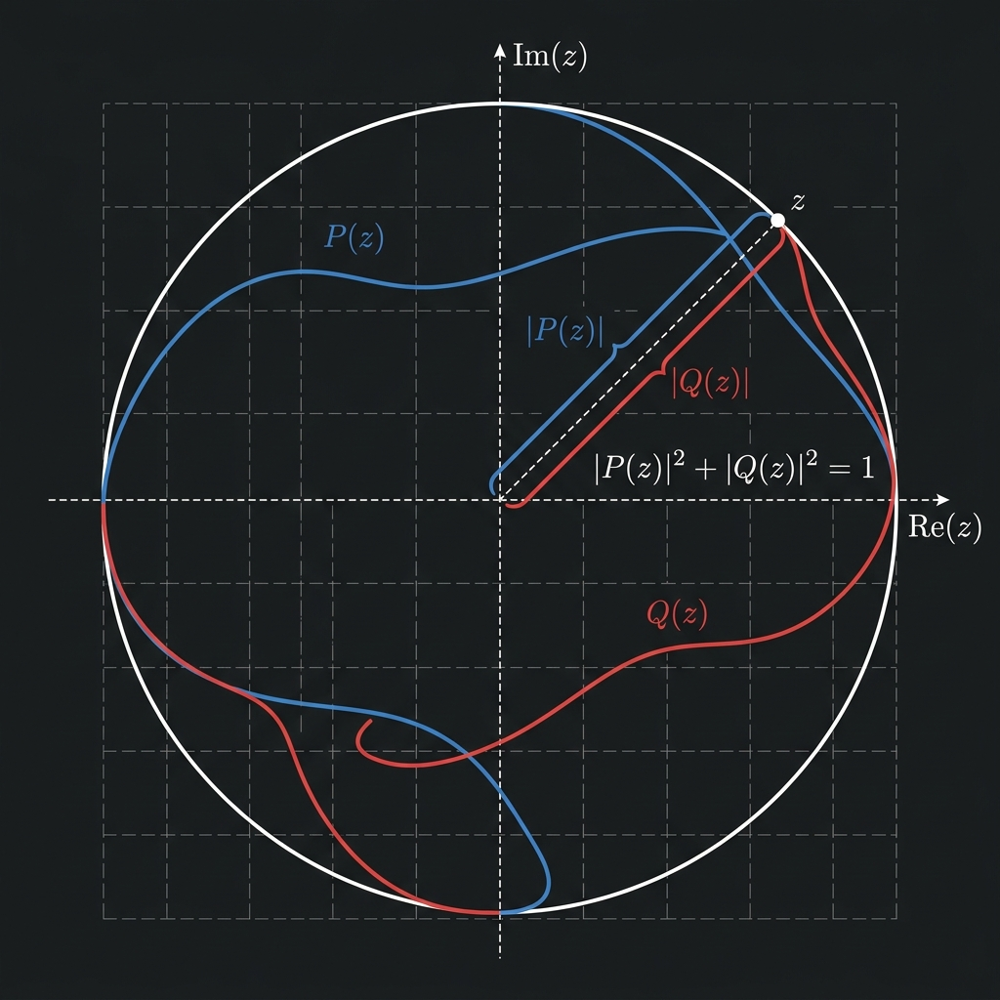

<!DOCTYPE html>
<html lang="en">
<head>
    <meta charset="UTF-8">
    <meta name="viewport" content="width=device-width, initial-scale=1.0">
    <title>Complementary Polynomial on Unit Circle - Yalais</title>
    <meta name="description" content="Formal Lean 4 proof and interactive concept animation of the Complementary Polynomial on Unit Circle (Fejér-Riesz Theorem variant).">
    
    <!-- KaTeX for LaTeX rendering -->
    <link rel="stylesheet" href="https://cdn.jsdelivr.net/npm/katex@0.16.8/dist/katex.min.css">
    <script defer src="https://cdn.jsdelivr.net/npm/katex@0.16.8/dist/katex.min.js"></script>
    <script defer src="https://cdn.jsdelivr.net/npm/katex@0.16.8/dist/contrib/auto-render.min.js" onload="renderMathInElement(document.body, {delimiters: [{left: '$$', right: '$$', display: true}, {left: '$', right: '$', display: false}]});"></script>
    
    <link rel="stylesheet" href="../assets/css/style.css">
</head>
<body>

    <!-- Navigation Bar -->
    <nav class="navbar" id="navbar">
        <div class="container nav-container">
            <a href="../index.html" class="brand">
                <span>yalais<span class="brand-accent">.</span></span>
            </a>
            <div class="nav-controls">
                <a href="../index.html" class="nav-link" style="font-weight: 500; font-size: 14px; margin-right: 8px;">Back to Catalog</a>
                <button class="theme-toggle-btn" onclick="toggleTheme()" aria-label="Toggle dark/light mode">🌙</button>
            </div>
        </div>
    </nav>

    <!-- Main Content -->
    <main class="container">
        <header class="detail-header">
            <h1 class="detail-title">Complementary Polynomial on Unit Circle</h1>
            <div class="detail-meta">
                <span class="badge-tag algebra">Algebra</span>
                <span class="badge-tag blue">Spectral Analysis</span>
                <span>File: <code class="code-ref">repl/proven/ComplementaryPolynomial.lean</code></span>
            </div>
        </header>

        <!-- Visual Row -->
        <div class="visual-row">
            <!-- Concept Animation Card -->
            <div class="animation-card">
                <div class="animation-header">
                    <span class="animation-title">Fejér-Riesz explorer</span>
                    <div style="display: flex; align-items: center; gap: 12px;">
                        <button class="expand-btn" onclick="toggleExpandAnimation()">&#x26F6; Expand</button>
                        <span class="animation-badge">Interactive 2D</span>
                    </div>
                </div>
                <div class="animation-wrapper">
                    <iframe src="../animations/complementary-polynomial.html" class="animation-iframe" title="Complementary Polynomial Interactive Animation"></iframe>
                </div>
            </div>

            <!-- Illustration Card -->
            <div class="illustration-card">
                <div class="illustration-header">Geometric Concept Illustration</div>
                <div class="illustration-img-wrapper">
                    
                </div>
            </div>
        </div>

        <!-- Content Row -->
        <div class="content-row">
            <!-- Mathematical Exposition -->
            <section class="exposition-panel">
                <h2>Mathematical Exposition</h2>
                <p>In <span class="text-algebra">spectral analysis</span> and <span class="text-algebra">operator theory</span>, the <strong>Fejér-Riesz theorem</strong> states that any non-negative trigonometric polynomial can be factored as the squared absolute value of a complex algebraic polynomial on the unit circle $S^1$.</p>

                <p>A beautiful consequence (and equivalent reformulation) is the existence of a <strong>complementary polynomial</strong>: if $P(z)$ is a complex polynomial such that $|P(z)| \le 1$ for all $z \in S^1$, there exists another complex polynomial $Q(z)$ of degree at most $\deg(P)$ such that:</p>
                $$|P(z)|^2 + |Q(z)|^2 = 1 \quad orall z \in S^1$$
                
                <h3>Spectral Factorization & Blaschke Factors</h3>
                <p>To prove this, if $P(z)$ has roots inside the unit disk, we can perform a degree-reducing division or utilize <strong>Blaschke reflections</strong>. For a root $w$ of $P(z)$ lying inside the unit disk ($|w| < 1$), we factor $P(z) = (z - w) P_1(z)$. We then replace the factor $(z - w)$ with the reflection term $(1 - ar{w} z)$, yielding a new polynomial:</p>
                $$P^*(z) = (1 - ar{w} z) P_1(z)$$
                
                <p>On the unit circle, the Blaschke factor satisfies $|z - w| = |1 - ar{w} z|$ because:</p>
                $$|1 - ar{w} z| = |z| |z^{-1} - ar{w}| = 1 \cdot |ar{z} - ar{w}| = |z - w|$$
                
                <p>Thus, $|P^*(z)| = |P(z)|$ on $S^1$. However, this reflection moves the root $w$ to $1/ar{w}$, which lies outside the unit disk, thereby reducing the number of roots inside the unit disk while preserving the boundary values.</p>

                <p>By repeatedly reflecting all roots inside the unit disk, we reduce the problem to the case where the polynomial has no roots inside the unit disk. At this stage, we apply the classical Fejér-Riesz spectral factorization to obtain the complementary polynomial $Q(z)$.</p>

                <h3>Lean 4 Formalization</h3>
                <p>The formal proof in Lean 4 utilizes a custom well-founded induction based on a polynomial measure:</p>
                $$\mu(P) = 2 \cdot 	ext{deg}(P) + 	ext{innerRootCount}(P)$$
                <p>For each step, the induction splits into cases:</p>
                <ol>
                    <li><strong>Base Case (Degree 0):</strong> $P$ is a constant $c$ with $|c| \le 1$. We choose $Q(z) = \sqrt{1 - |c|^2}$ as a constant polynomial.</li>
                    <li><strong>Root at 0:</strong> $P(z) = z P_1(z)$. The degree decreases, and we can directly apply the induction hypothesis on $P_1(z)$.</li>
                    <li><strong>Root inside the unit disk ($0 < |w| < 1$):</strong> We use the Blaschke reflection $P^*(z) = (1 - ar{w} z) P_1(z)$. The number of roots inside the unit disk strictly decreases, lowering $\mu(P^*)$, allowing the inductive step to proceed.</li>
                    <li><strong>No roots inside the unit disk:</strong> We directly apply the Fejér-Riesz terminal theorem to complete the factorization.</li>
                </ol>
            </section>

            <!-- Lean 4 Code block -->
            <section class="code-panel">
                <div class="code-header">
                    <span class="code-title">ComplementaryPolynomial.lean</span>
                    <button class="copy-btn" data-target="lean-code">Copy Code</button>
                </div>
                <pre class="code-content"><code id="lean-code" class="language-lean">import Mathlib

open Polynomial Complex
open scoped ComplexConjugate
open Metric Filter
open scoped Topology


namespace Submission

/-! ## Circle identity and Blaschke norm preservation -/

lemma circle_identity (z : Circle) (w : ℂ) :
    ‖1 - conj w * (z : ℂ)‖ = ‖(z : ℂ) - w‖ := by
  have hz : (z : ℂ) * conj (z : ℂ) = 1 := by
    calc (z : ℂ) * conj (z : ℂ)
        = (z : ℂ) * (z : ℂ)⁻¹ := by rw [← Circle.coe_inv_eq_conj, Circle.coe_inv]
      _ = 1 := mul_inv_cancel₀ (Circle.coe_ne_zero z)
  have h1 : 1 - conj w * (z : ℂ) = (z : ℂ) * (conj (z : ℂ) - conj w) := by
    have : 1 = (z : ℂ) * conj (z : ℂ) := hz.symm
    linear_combination this
  rw [h1, norm_mul, Circle.norm_coe, one_mul, ← map_sub]
  exact Complex.norm_conj (_ - _)

lemma blaschke_norm_eq (P1 : ℂ[X]) (w : ℂ) (z : Circle) :
    ‖eval (z : ℂ) ((X - C w) * P1)‖ =
    ‖eval (z : ℂ) ((1 - C (conj w) * X) * P1)‖ := by
  simp only [eval_mul, eval_sub, eval_X, eval_C, eval_one]
  rw [norm_mul, norm_mul, circle_identity z w]

/-! ## Constant polynomial base case -/

lemma exists_complementary_constant (c : ℂ) (hc : ‖c‖ ≤ 1) :
    ∃ Q : ℂ[X], Q.natDegree ≤ 0 ∧
      ∀ z : Circle, ‖(C c).eval (z : ℂ)‖ ^ 2 + ‖Q.eval (z : ℂ)‖ ^ 2 = 1 := by
  use C (↑(Real.sqrt (1 - ‖c‖ ^ 2)) : ℂ)
  exact ⟨(natDegree_C _).trans_le (by decide), fun z =&gt; by
    simp only [eval_C]
    rw [Complex.norm_of_nonneg (Real.sqrt_nonneg _),
        Real.sq_sqrt (by nlinarith [norm_nonneg c])]
    ring⟩

/-! ## Degree reduction -/

lemma degree_reduction (P : ℂ[X]) (w : ℂ) (n : ℕ)
    (hP_deg : P.natDegree = n + 1) (hw : IsRoot P w) :
    ∃ P1 : ℂ[X], P = (X - C w) * P1 ∧ P1.natDegree = n := by
  obtain ⟨P1, hP1⟩ := dvd_iff_isRoot.mpr hw
  use P1
  refine ⟨hP1, ?_⟩
  have hP_ne : P ≠ 0 := by rintro rfl; simp at hP_deg
  have hP1_ne : P1 ≠ 0 := by rintro rfl; simp [hP1] at hP_ne
  have h := natDegree_mul (X_sub_C_ne_zero w) hP1_ne
  rw [natDegree_X_sub_C] at h; rw [hP1] at hP_deg; omega

/-! ## Pstar degree bound -/

lemma pstar_deg_le (P1 : ℂ[X]) (w : ℂ) (n : ℕ) (hP1_deg : P1.natDegree = n) :
    ((1 - C (conj w) * X) * P1).natDegree ≤ n + 1 := by
  have h1 : (1 - C (conj w) * X).natDegree ≤ 1 := by
    have h := natDegree_sub_le (1 : ℂ[X]) (C (conj w) * X)
    have h2 : (C (conj w) * X).natDegree ≤ 1 :=
      natDegree_mul_le.trans (by simp)
    calc (1 - C (conj w) * X).natDegree
        ≤ max (1 : ℂ[X]).natDegree (C (conj w) * X).natDegree := h
      _ ≤ max 0 1 := max_le_max (le_of_eq natDegree_one) h2
      _ = 1 := by norm_num
  exact natDegree_mul_le.trans (by omega)

/-! ## Blaschke norm preservation on circle -/

lemma pstar_circle_bound (P : ℂ[X]) (w : ℂ)
    (hP : ∀ z : Circle, ‖P.eval (z : ℂ)‖ ≤ 1)
    (P1 : ℂ[X]) (hP1 : P = (X - C w) * P1) :
    ∀ z : Circle, ‖((1 - C (conj w) * X) * P1).eval (z : ℂ)‖ ≤ 1 := by
  intro z; rw [← blaschke_norm_eq, ← hP1]; exact hP z

/-! ## Root count and measure infrastructure -/

noncomputable def innerRootCount (P : ℂ[X]) : ℕ :=
  (P.roots.filter (fun w =&gt; ‖w‖ &lt; 1)).card

noncomputable def polyMeasure (P : ℂ[X]) : ℕ :=
  2 * P.natDegree + innerRootCount P

lemma innerRootCount_le_natDegree (P : ℂ[X]) : innerRootCount P ≤ P.natDegree :=
  (Multiset.card_le_card (Multiset.filter_le _ _)).trans (card_roots&#x27; P)

lemma roots_blaschke_factor (w : ℂ) (hw : w ≠ 0) :
    (1 - C (conj w) * X : ℂ[X]).roots = {(conj w)⁻¹} := by
  have hcw : conj w ≠ 0 := by simp [hw]
  have : (1 : ℂ[X]) - C (conj w) * X = -(C (conj w) * X - C 1) := by simp [C_1]
  rw [this, roots_neg]; simpa using roots_C_mul_X_sub_C 1 hcw

lemma innerRootCount_zero_root (P1 : ℂ[X]) (hP1 : P1 ≠ 0) :
    innerRootCount ((X - C (0 : ℂ)) * P1) = innerRootCount P1 + 1 := by
  unfold innerRootCount
  rw [roots_mul (mul_ne_zero (X_sub_C_ne_zero 0) hP1), roots_X_sub_C,
      Multiset.filter_add,
      show Multiset.filter (fun w =&gt; ‖w‖ &lt; 1) ({(0 : ℂ)} : Multiset ℂ) = {0} from
        by rw [Multiset.filter_singleton, if_pos (by simp : ‖(0 : ℂ)‖ &lt; 1)]]
  simp

lemma innerRootCount_blaschke_lt (P1 : ℂ[X]) (w : ℂ)
    (hw_ne : w ≠ 0) (hw_inside : ‖w‖ &lt; 1) (hP1_ne : P1 ≠ 0) :
    innerRootCount ((1 - C (conj w) * X) * P1) &lt;
    innerRootCount ((X - C w) * P1) := by
  unfold innerRootCount
  have hBl_ne : (1 - C (conj w) * X : ℂ[X]) ≠ 0 := by
    intro h; have := congr_arg (fun p =&gt; p.eval 0) h; simp at this
  rw [roots_mul (mul_ne_zero (X_sub_C_ne_zero w) hP1_ne), roots_X_sub_C,
      roots_mul (mul_ne_zero hBl_ne hP1_ne), roots_blaschke_factor w hw_ne,
      Multiset.filter_add, Multiset.filter_add,
      show Multiset.filter (fun w =&gt; ‖w‖ &lt; 1) ({w} : Multiset ℂ) = {w} from
        by rw [Multiset.filter_singleton, if_pos hw_inside],
      show Multiset.filter (fun w =&gt; ‖w‖ &lt; 1) ({(conj w)⁻¹} : Multiset ℂ) = ∅ from
        by rw [Multiset.filter_singleton, if_neg (by
          rw [not_lt, norm_inv, Complex.norm_conj,
              le_inv_comm₀ (by linarith : (0 : ℝ) &lt; 1) (norm_pos_iff.mpr hw_ne)]
          linarith)]]
  simp

/-! ## Measure decrease lemmas -/

lemma polyMeasure_zero_root (P P1 : ℂ[X]) (n : ℕ)
    (hP_deg : P.natDegree = n + 1)
    (hP1_eq : P = (X - C (0 : ℂ)) * P1) (hP1_deg : P1.natDegree = n)
    (hP1_ne : P1 ≠ 0) :
    polyMeasure P1 &lt; polyMeasure P := by
  unfold polyMeasure
  rw [hP_deg, hP1_deg, hP1_eq, innerRootCount_zero_root P1 hP1_ne]; omega

lemma polyMeasure_blaschke (P P1 : ℂ[X]) (w : ℂ) (n : ℕ)
    (hP_deg : P.natDegree = n + 1)
    (hP1_eq : P = (X - C w) * P1) (hP1_deg : P1.natDegree = n) (hP1_ne : P1 ≠ 0)
    (hw_ne : w ≠ 0) (hw_inside : ‖w‖ &lt; 1) :
    polyMeasure ((1 - C (conj w) * X) * P1) &lt; polyMeasure P := by
  unfold polyMeasure
  have h_inner_lt : innerRootCount ((1 - C (conj w) * X) * P1) &lt; innerRootCount P := by
    rw [hP1_eq]; exact innerRootCount_blaschke_lt P1 w hw_ne hw_inside hP1_ne
  have h_pstar_deg := pstar_deg_le P1 w n hP1_deg
  omega

/-! ## Conjugate-reverse polynomial and spectral factorization -/

/-- The conjugate-reverse polynomial. -/
noncomputable def conjRev&#x27; (P : ℂ[X]) : ℂ[X] :=
  P.reverse.map (starRingEnd ℂ)

lemma conjRev&#x27;_C (a : ℂ) : conjRev&#x27; (C a) = C (conj a) := by
  unfold conjRev&#x27;
  rw [reverse_C, Polynomial.map_C]

lemma conjRev&#x27;_mul (P Q : ℂ[X]) : conjRev&#x27; (P * Q) = conjRev&#x27; P * conjRev&#x27; Q := by
  simp only [conjRev&#x27;, reverse_mul_of_domain, Polynomial.map_mul]

lemma reverse_X_sub_C {R : Type*} [Ring R] [Nontrivial R] (r : R) :
    (X - C r).reverse = 1 - C r * X := by
  rw [sub_eq_add_neg, ← C_neg, reverse_add_C]
  rw [natDegree_X, pow_one]
  have hX : (X : R[X]).reverse = 1 := by
    unfold reverse
    rw [natDegree_X]
    exact reflect_one_X
  rw [hX, C_neg]
  rw [sub_eq_add_neg, neg_mul]

lemma conjRev&#x27;_X_sub_C (r : ℂ) :
    conjRev&#x27; (X - C r) = 1 - C (conj r) * X := by
  rw [conjRev&#x27;]
  rw [reverse_X_sub_C]
  rw [Polynomial.map_sub, Polynomial.map_one, Polynomial.map_mul, Polynomial.map_C, Polynomial.map_X]

lemma eval_map_conj (P : ℂ[X]) (z : ℂ) :
    (P.map (starRingEnd ℂ)).eval z = conj (P.eval (conj z)) := by
  induction P using Polynomial.induction_on&#x27; with
  | add p q hp hq =&gt;
    simp only [Polynomial.map_add, eval_add, hp, hq, map_add]
  | monomial n a =&gt;
    rw [← C_mul_X_pow_eq_monomial]
    simp only [starRingEnd_apply, star_star, Polynomial.map_mul, Polynomial.map_C, Polynomial.map_pow,
      Polynomial.map_X, eval_mul, eval_C, eval_pow, eval_X, map_mul, map_pow]

lemma sum_range_congr {M : Type*} [AddCommMonoid M] {n m : ℕ} (h : n ≤ m) (f : ℕ → M)
    (hf : ∀ i, n ≤ i → i &lt; m → f i = 0) :
    ∑ i ∈ Finset.range n, f i = ∑ i ∈ Finset.range m, f i := by
  have h_eq : m = n + (m - n) := (Nat.add_sub_of_le h).symm
  rw [h_eq]
  rw [Finset.sum_range_add]
  have : ∑ x ∈ Finset.range (m - n), f (n + x) = 0 := by
    apply Finset.sum_eq_zero
    intro i hi
    simp only [Finset.mem_range] at hi
    apply hf
    · omega
    · omega
  rw [this, add_zero]

lemma eval_reverse_eq (P : ℂ[X]) (z : ℂ) (hz : z ≠ 0) :
    P.reverse.eval z = z ^ P.natDegree * P.eval (1 / z) := by
  rw [eval_eq_sum_range, eval_eq_sum_range, Finset.mul_sum]
  have h_deg : P.reverse.natDegree ≤ P.natDegree := reverse_natDegree_le P
  rw [sum_range_congr (Nat.add_le_add_right h_deg 1)]
  · have h_rhs : ∑ k ∈ Finset.range (P.natDegree + 1), z ^ P.natDegree * (P.coeff k * (1 / z) ^ k) =
                 ∑ k ∈ Finset.range (P.natDegree + 1), P.coeff k * (z ^ P.natDegree * (1 / z) ^ k) := by
      apply Finset.sum_congr rfl
      intro k hk
      ring
    rw [h_rhs]
    rw [← Finset.sum_range_reflect (fun k =&gt; P.coeff k * (z ^ P.natDegree * (1 / z) ^ k))]
    have h_sub : ∀ j ∈ Finset.range (P.natDegree + 1), P.natDegree + 1 - 1 - j = P.natDegree - j := by
      intro j hj
      simp only [Finset.mem_range] at hj
      omega
    have h_ref : ∑ j ∈ Finset.range (P.natDegree + 1),
      P.coeff (P.natDegree + 1 - 1 - j) * (z ^ P.natDegree * (1 / z) ^ (P.natDegree + 1 - 1 - j)) =
      ∑ j ∈ Finset.range (P.natDegree + 1),
      P.coeff (P.natDegree - j) * (z ^ P.natDegree * (1 / z) ^ (P.natDegree - j)) := by
      apply Finset.sum_congr rfl
      intro j hj
      rw [h_sub j hj]
    rw [h_ref]
    apply Finset.sum_congr rfl
    intro k hk
    simp only [Finset.mem_range] at hk
    have hk_le : k ≤ P.natDegree := by omega
    rw [coeff_reverse]
    rw [revAt_le hk_le]
    congr 1
    rw [one_div, inv_pow]
    have hz_pow : z ^ P.natDegree = z ^ (P.natDegree - k) * z ^ k := by
      rw [← pow_add, Nat.sub_add_cancel hk_le]
    rw [hz_pow]
    symm
    calc z ^ (P.natDegree - k) * z ^ k * (z ^ (P.natDegree - k))⁻¹
      _ = z ^ k * (z ^ (P.natDegree - k) * (z ^ (P.natDegree - k))⁻¹) := by ring
      _ = z ^ k * 1 := by rw [mul_inv_cancel₀ (pow_ne_zero _ hz)]
      _ = z ^ k := by rw [mul_one]
  · intro k hk _
    rw [coeff_eq_zero_of_natDegree_lt (by omega), zero_mul]

lemma conjRev&#x27;_eval_eq (P : ℂ[X]) (z : ℂ) (hz : z ≠ 0) :
    (conjRev&#x27; P).eval z = z ^ P.natDegree * conj (P.eval (1 / conj z)) := by
  unfold conjRev&#x27;
  rw [eval_map_conj, eval_reverse_eq P (conj z) (by simp [hz])]
  simp only [map_mul, map_pow, starRingEnd_apply, star_star]

lemma eq_of_eval_eq_zero_of_finite (P : ℂ[X]) (K : Finset ℂ) (h : ∀ z : ℂ, z ∉ K → P.eval z = 0) : P = 0 := by
  have h_roots : {z : ℂ | P.eval z = 0}.Infinite := by
    apply Set.Infinite.mono (s := (K : Set ℂ)ᶜ)
    · intro z hz
      simp only [Set.mem_compl_iff, Finset.mem_coe] at hz
      exact h z hz
    · have h_diff := Set.Infinite.diff Set.infinite_univ K.finite_toSet
      have h_eq : (Set.univ \ (K : Set ℂ)) = (K : Set ℂ)ᶜ := by ext x; simp
      rwa [h_eq] at h_diff
  by_cases hP : P = 0
  · exact hP
  · have h_fin := (roots P).toFinset.finite_toSet
    have h_sub : {z : ℂ | P.eval z = 0} ⊆ (roots P).toFinset := by
      intro z hz
      simp only [Set.mem_setOf_eq] at hz
      simp [hz, hP]
    have h_inf&#x27; : ((roots P).toFinset : Set ℂ).Infinite := Set.Infinite.mono h_sub h_roots
    exfalso
    exact h_fin.not_infinite h_inf&#x27;

lemma eq_of_eval_eq_of_finite (P Q : ℂ[X]) (K : Finset ℂ) (h : ∀ z : ℂ, z ∉ K → P.eval z = Q.eval z) : P = Q := by
  rw [← sub_eq_zero]
  apply eq_of_eval_eq_zero_of_finite _ K
  intro z hz
  rw [eval_sub, h z hz, sub_self]

lemma conjRev&#x27;_eval_circle (P : ℂ[X]) (z : Circle) :
    (conjRev&#x27; P).eval (z : ℂ) = (z : ℂ) ^ P.natDegree * conj (P.eval (z : ℂ)) := by
  have hz := Circle.coe_ne_zero z
  rw [conjRev&#x27;_eval_eq P (z : ℂ) hz]
  rw [← Circle.coe_inv_eq_conj, Circle.coe_inv, one_div, inv_inv]

lemma norm_conjRev&#x27;_circle (P : ℂ[X]) (z : Circle) :
    ‖(conjRev&#x27; P).eval (z : ℂ)‖ = ‖P.eval (z : ℂ)‖ := by
  rw [conjRev&#x27;_eval_circle, norm_mul, norm_pow, Circle.norm_coe, one_pow, one_mul,
      Complex.norm_conj]

/-- Spectral polynomial definition -/
noncomputable def spectralPoly (P : ℂ[X]) : ℂ[X] :=
  (X : ℂ[X]) ^ P.natDegree - P * conjRev&#x27; P

lemma spectralPoly_eval_circle (P : ℂ[X]) (z : Circle) :
    (spectralPoly P).eval (z : ℂ) =
      (z : ℂ) ^ P.natDegree * (1 - ↑(‖P.eval (z : ℂ)‖ ^ 2) : ℂ) := by
  unfold spectralPoly
  simp only [eval_sub, eval_mul, eval_pow, eval_X]
  rw [conjRev&#x27;_eval_circle,
      show P.eval (z : ℂ) * ((z : ℂ) ^ P.natDegree * conj (P.eval (z : ℂ))) =
        (z : ℂ) ^ P.natDegree * (P.eval (z : ℂ) * conj (P.eval (z : ℂ))) by ring,
      Complex.mul_conj&#x27;]
  push_cast; ring

lemma conjRev&#x27;_natDegree (P : ℂ[X]) : (conjRev&#x27; P).natDegree ≤ P.natDegree := by
  unfold conjRev&#x27;
  refine natDegree_map_le.trans ?_
  exact reverse_natDegree_le P

lemma spectralPoly_natDegree_le (P : ℂ[X]) :
    (spectralPoly P).natDegree ≤ 2 * P.natDegree := by
  unfold spectralPoly
  refine (natDegree_sub_le ((X : ℂ[X]) ^ P.natDegree) (P * conjRev&#x27; P)).trans ?_
  have h1 : ((X : ℂ[X]) ^ P.natDegree).natDegree = P.natDegree := by rw [natDegree_X_pow]
  have h3 := conjRev&#x27;_natDegree P
  have h4 : (P * conjRev&#x27; P).natDegree ≤ P.natDegree + (conjRev&#x27; P).natDegree := natDegree_mul_le
  rw [h1]
  omega

lemma spectralPoly_eval_symmetry (P : ℂ[X]) (z : ℂ) (hz : z ≠ 0) :
    (spectralPoly P).eval z = z ^ (2 * P.natDegree) * conj ((spectralPoly P).eval (1 / conj z)) := by
  unfold spectralPoly
  simp only [eval_sub, eval_mul, eval_pow, eval_X]
  have hz_conj : conj z ≠ 0 := by simp [hz]
  have h_inv_ne : 1 / conj z ≠ 0 := one_div_ne_zero hz_conj
  rw [conjRev&#x27;_eval_eq P z hz, conjRev&#x27;_eval_eq P (1 / conj z) h_inv_ne]
  simp only [starRingEnd_apply, star_sub, star_mul, star_pow, star_star, star_div₀, star_one, one_div_one_div]
  have h_inv_pow : (1 / z) ^ P.natDegree = 1 / z ^ P.natDegree := by rw [div_pow, one_pow]
  rw [h_inv_pow]
  have h_pow_two : z ^ (2 * P.natDegree) = z ^ P.natDegree * z ^ P.natDegree := by
    rw [← pow_add, ← two_mul]
  rw [h_pow_two]
  have hz_pow_ne : z ^ P.natDegree ≠ 0 := pow_ne_zero _ hz
  have h_term1 : z ^ P.natDegree * z ^ P.natDegree * (1 / z ^ P.natDegree) = z ^ P.natDegree := by
    rw [mul_one_div, mul_div_cancel_right₀ _ hz_pow_ne]
  have h_term2 : z ^ P.natDegree * z ^ P.natDegree * (eval z P * (1 / z ^ P.natDegree) * star (eval (1 / star z) P)) =
      eval z P * (z ^ P.natDegree * star (eval (1 / star z) P)) := by
    calc z ^ P.natDegree * z ^ P.natDegree * (eval z P * (1 / z ^ P.natDegree) * star (eval (1 / star z) P))
      _ = (z ^ P.natDegree * z ^ P.natDegree * (1 / z ^ P.natDegree)) * (eval z P * star (eval (1 / star z) P)) := by ring
      _ = z ^ P.natDegree * (eval z P * star (eval (1 / star z) P)) := by rw [h_term1]
      _ = eval z P * (z ^ P.natDegree * star (eval (1 / star z) P)) := by ring
  symm
  calc z ^ P.natDegree * z ^ P.natDegree * (1 / z ^ P.natDegree - eval z P * (1 / z ^ P.natDegree) * star (eval (1 / star z) P))
    _ = (z ^ P.natDegree * z ^ P.natDegree * (1 / z ^ P.natDegree)) - (z ^ P.natDegree * z ^ P.natDegree * (eval z P * (1 / z ^ P.natDegree) * star (eval (1 / star z) P))) := by ring
    _ = z ^ P.natDegree - eval z P * (z ^ P.natDegree * star (eval (1 / star z) P)) := by rw [h_term1, h_term2]

lemma test_zpow_cancel (z : Circle) (n : ℕ) :
    (z : ℂ) ^ (-(n : ℤ)) * (z : ℂ) ^ n = 1 := by
  have hz := Circle.coe_ne_zero z
  rw [← zpow_natCast (z : ℂ) n, ← zpow_add₀ hz, neg_add_cancel, zpow_zero]

lemma spectralPoly_eval_circle_nonneg (P : ℂ[X]) (hP : ∀ z : Circle, ‖P.eval (z : ℂ)‖ ≤ 1) (z : Circle) :
    0 ≤ ((z : ℂ) ^ (-(P.natDegree : ℤ)) * (spectralPoly P).eval (z : ℂ)).re ∧
    ((z : ℂ) ^ (-(P.natDegree : ℤ)) * (spectralPoly P).eval (z : ℂ)).im = 0 := by
  rw [spectralPoly_eval_circle, ← mul_assoc, test_zpow_cancel, one_mul]
  refine ⟨?_, ?_⟩
  · simp only [Complex.ofReal_re, Complex.sub_re, Complex.one_re]
    have h_norm : ‖P.eval (z : ℂ)‖ ^ 2 ≤ 1 := by
      have := hP z
      nlinarith [norm_nonneg (P.eval (z : ℂ))]
    exact by linarith
  · simp only [Complex.sub_im, Complex.one_im, Complex.ofReal_im, sub_self]

def IsSpectral (n : ℕ) (S : ℂ[X]) : Prop :=
  S.natDegree ≤ 2 * n ∧
  (∀ z : ℂ, z ≠ 0 → S.eval z = z ^ (2 * n) * conj (S.eval (1 / conj z))) ∧
  (∀ z : Circle, 0 ≤ ((z : ℂ) ^ (- (n : ℤ)) * S.eval (z : ℂ)).re ∧
                 ((z : ℂ) ^ (- (n : ℤ)) * S.eval (z : ℂ)).im = 0)

lemma spectralPoly_isSpectral (P : ℂ[X]) (hP : ∀ z : Circle, ‖P.eval (z : ℂ)‖ ≤ 1) :
    IsSpectral P.natDegree (spectralPoly P) := by
  refine ⟨spectralPoly_natDegree_le P, ?_, spectralPoly_eval_circle_nonneg P hP⟩
  intro z hz
  exact spectralPoly_eval_symmetry P z hz

lemma isSpectral_eq (n : ℕ) (S : ℂ[X])
    (h_symm : ∀ z : ℂ, z ≠ 0 → S.eval z = z ^ (2 * n) * conj (S.eval (1 / conj z))) :
    S * X ^ S.natDegree = X ^ (2 * n) * conjRev&#x27; S := by
  apply eq_of_eval_eq_of_finite _ _ {0}
  intro z hz
  simp only [Finset.mem_singleton] at hz
  have h1 := h_symm z hz
  have h2 := conjRev&#x27;_eval_eq S z hz
  simp only [eval_mul, eval_X, eval_pow]
  calc S.eval z * z ^ S.natDegree
    _ = z ^ (2 * n) * conj (S.eval (1 / conj z)) * z ^ S.natDegree := by rw [h1]
    _ = z ^ (2 * n) * (z ^ S.natDegree * conj (S.eval (1 / conj z))) := by ring
    _ = z ^ (2 * n) * (conjRev&#x27; S).eval z := by rw [h2]

lemma conjRev&#x27;_coeff_natDegree (S : ℂ[X]) :
    (conjRev&#x27; S).coeff S.natDegree = conj (S.coeff 0) := by
  unfold conjRev&#x27;
  rw [coeff_map, coeff_reverse]
  simp only [starRingEnd_apply]
  have h_revAt : revAt S.natDegree S.natDegree = 0 := by simp [revAt]
  rw [h_revAt]

lemma isSpectral_coeff_zero (n : ℕ) (S : ℂ[X])
    (h_symm : ∀ z : ℂ, z ≠ 0 → S.eval z = z ^ (2 * n) * conj (S.eval (1 / conj z))) :
    S.coeff 0 = conj (S.coeff (2 * n)) := by
  have h_eq := isSpectral_eq n S h_symm
  have h_coeff := congr_arg (fun P : ℂ[X] =&gt; P.coeff (2 * n + S.natDegree)) h_eq
  have h_LHS : (S * X ^ S.natDegree).coeff (2 * n + S.natDegree) = S.coeff (2 * n) := by
    have h_nat : 2 * n + S.natDegree = 2 * n + S.natDegree := rfl
    rw [coeff_mul_X_pow]
  have h_RHS : (X ^ (2 * n) * conjRev&#x27; S).coeff (2 * n + S.natDegree) = conj (S.coeff 0) := by
    rw [mul_comm]
    have h_nat : 2 * n + S.natDegree = S.natDegree + 2 * n := add_comm _ _
    rw [h_nat, coeff_mul_X_pow]
    rw [conjRev&#x27;_coeff_natDegree]
  change (S * X ^ S.natDegree).coeff (2 * n + S.natDegree) = (X ^ (2 * n) * conjRev&#x27; S).coeff (2 * n + S.natDegree) at h_coeff
  rw [h_LHS, h_RHS] at h_coeff
  have h_final : S.coeff (2 * n) = conj (S.coeff 0) := h_coeff
  calc S.coeff 0 = conj (conj (S.coeff 0)) := Complex.conj_conj _ |&gt;.symm
       _ = conj (S.coeff (2 * n)) := by rw [← h_final]

-- Fejér-Riesz inductive components
lemma fejer_riesz_base (S : ℂ[X]) (hS : IsSpectral 0 S) :
    ∃ Q : ℂ[X], Q.natDegree ≤ 0 ∧ S = Q * conjRev&#x27; Q := by
  have h0 : S.natDegree = 0 := Nat.le_zero.mp hS.1
  obtain ⟨c, rfl⟩ : ∃ c : ℂ, S = C c := ⟨S.coeff 0, eq_C_of_natDegree_eq_zero h0⟩
  have hc_conj : c = conj c := by
    have h := hS.2.1 1 one_ne_zero; simp only [eval_C, one_div] at h; simpa using h
  have hc_im : c.im = 0 := Complex.conj_eq_iff_im.mp hc_conj.symm
  have hc_pos : 0 ≤ c.re := by
    have h := (hS.2.2 1).1
    simp only [Nat.cast_zero, neg_zero, zpow_zero, one_mul, eval_C] at h; exact h
  refine ⟨C (↑(Real.sqrt c.re) : ℂ), (natDegree_C _).le, ?_⟩
  rw [conjRev&#x27;_C, Complex.conj_ofReal, ← map_mul, ← Complex.ofReal_mul,
      Real.mul_self_sqrt hc_pos]
  congr 1
  exact Complex.ext rfl (by simp [hc_im])

lemma dvd_of_distinct_roots (S : ℂ[X]) (r₁ r₂ : ℂ) (h₁ : S.eval r₁ = 0) (h₂ : S.eval r₂ = 0) (hne : r₁ ≠ r₂) :
    ∃ S₁ : ℂ[X], S = (X - C r₁) * (X - C r₂) * S₁ := by
  obtain ⟨Stemp, hStemp⟩ := dvd_iff_isRoot.mpr h₁
  have h_eval₂ : S.eval r₂ = 0 := h₂
  rw [hStemp, eval_mul, eval_sub, eval_X, eval_C] at h_eval₂
  have h_ne_sub : r₂ - r₁ ≠ 0 := sub_ne_zero.mpr hne.symm
  have h_eval_temp : Stemp.eval r₂ = 0 := by
    cases mul_eq_zero.mp h_eval₂ with
    | inl h =&gt; exact False.elim (h_ne_sub h)
    | inr h =&gt; exact h
  obtain ⟨S₁, hS₁⟩ := dvd_iff_isRoot.mpr h_eval_temp
  use S₁
  rw [hStemp, hS₁]
  ring

lemma spectral_factor_non_circle (n : ℕ) (S : ℂ[X]) (hS : IsSpectral (n + 1) S) (r : ℂ) (hroot : S.eval r = 0)
    (hr_ne : r ≠ 0) (hr_norm : ‖r‖ ≠ 1) :
    ∃ S₁ : ℂ[X], S = (X - C r) * (1 - C (conj r) * X) * S₁ := by
  have h_conj_ne : conj r ≠ 0 := by simp [hr_ne]
  have h_inv_ne : 1 / conj r ≠ 0 := one_div_ne_zero h_conj_ne
  have hroot2 : S.eval (1 / conj r) = 0 := by
    have hS_symm := hS.2.1 (1 / conj r) h_inv_ne
    rw [hS_symm]
    have h_conj_inv : conj (1 / conj r) = 1 / r := by
      simp
    rw [h_conj_inv]
    have h_inv_inv : 1 / (1 / r) = r := by
      rw [one_div_one_div]
    rw [h_inv_inv, hroot, map_zero, mul_zero]
  have hne : r ≠ 1 / conj r := by
    intro h
    have h_mul : r * conj r = 1 := by
      calc r * conj r = (1 / conj r) * conj r := by nth_rw 1 [h]
      _ = 1 := div_mul_cancel₀ 1 h_conj_ne
    have h_norm_sq : ‖r‖ ^ 2 = 1 := by
      have h_norm_sq_coe : ((‖r‖ : ℂ) ^ 2) = 1 := by
        rw [← h_mul]
        exact (Complex.mul_conj&#x27; r).symm
      exact_mod_cast h_norm_sq_coe
    have h_norm_eq : ‖r‖ = 1 := by
      have h1 : ‖r‖ ^ 2 = 1 := h_norm_sq
      have h2 : 0 ≤ ‖r‖ := norm_nonneg r
      nlinarith
    exact hr_norm h_norm_eq
  obtain ⟨Stemp, hStemp⟩ := dvd_of_distinct_roots S r (1 / conj r) hroot hroot2 hne
  have h_eq : (1 - C (conj r) * X) = - C (conj r) * (X - C (1 / conj r)) := by
    calc (1 - C (conj r) * X)
      _ = C 1 - C (conj r) * X := by rw [map_one]
      _ = C (conj r * (1 / conj r)) - C (conj r) * X := by
            rw [mul_one_div, div_self h_conj_ne]
      _ = C (conj r) * C (1 / conj r) - C (conj r) * X := by rw [map_mul]
      _ = - C (conj r) * (X - C (1 / conj r)) := by ring
  use - C (conj r)⁻¹ * Stemp
  rw [hStemp]
  calc (X - C r) * (X - C (1 / conj r)) * Stemp
    _ = (X - C r) * ((X - C (1 / conj r)) * Stemp) := by ring
    _ = (X - C r) * ((1 - C (conj r) * X) * (- C (conj r)⁻¹ * Stemp)) := by
      rw [h_eq]
      have : - C (conj r) * (X - C (1 / conj r)) * (- C (conj r)⁻¹ * Stemp) =
             (X - C (1 / conj r)) * Stemp := by
        calc - C (conj r) * (X - C (1 / conj r)) * (- C (conj r)⁻¹ * Stemp)
          _ = (- C (conj r) * - C (conj r)⁻¹) * ((X - C (1 / conj r)) * Stemp) := by ring
          _ = (C (conj r) * C (conj r)⁻¹) * ((X - C (1 / conj r)) * Stemp) := by
            simp only [neg_mul, mul_neg, neg_neg]
          _ = C (conj r * (conj r)⁻¹) * ((X - C (1 / conj r)) * Stemp) := by
            rw [← map_mul]
          _ = C 1 * ((X - C (1 / conj r)) * Stemp) := by
            rw [mul_inv_cancel₀ h_conj_ne]
          _ = (X - C (1 / conj r)) * Stemp := by
            simp
      rw [this]
    _ = (X - C r) * (1 - C (conj r) * X) * (- C (conj r)⁻¹ * Stemp) := by ring

lemma spectral_degree_bound_factors (r : ℂ) (h_conj_ne_zero : conj r ≠ 0) : ((X - C r) * (1 - C (conj r) * X)).natDegree = 2 := by
  have hA : (X - C r).natDegree = 1 := natDegree_X_sub_C r
  have hB : (1 - C (conj r) * X).natDegree = 1 := by
    have hB1 : 1 - C (conj r) * X = C (- conj r) * X + C 1 := by
      rw [map_neg, map_one]
      ring
    rw [hB1]
    exact natDegree_linear (neg_ne_zero.mpr h_conj_ne_zero)
  have hA_ne : X - C r ≠ 0 := X_sub_C_ne_zero r
  have hB_ne : 1 - C (conj r) * X ≠ 0 := by
    intro h
    have h_eval : eval 0 (1 - C (conj r) * X) = eval 0 0 := congr_arg (fun P =&gt; eval 0 P) h
    simp only [eval_sub, eval_one, eval_mul, eval_C, eval_X, mul_zero, sub_zero, eval_zero] at h_eval
    exact one_ne_zero h_eval
  have hF_ne_zero : (X - C r) * (1 - C (conj r) * X) ≠ 0 := mul_ne_zero hA_ne hB_ne
  rw [natDegree_mul hA_ne hB_ne, hA, hB]

lemma spectral_degree_bound_helper (n : ℕ) (S : ℂ[X]) (hS : IsSpectral (n + 1) S) (r : ℂ) (S₁ : ℂ[X]) (hS_eq : S = (X - C r) * (1 - C (conj r) * X) * S₁) :
    S₁.natDegree ≤ 2 * n := by
  by_cases hS1_zero : S₁ = 0
  · rw [hS1_zero, natDegree_zero]
    exact Nat.zero_le _
  · have hS_deg := hS.1
    by_cases hr_zero : r = 0
    · subst hr_zero
      have hS_eq2 : S = X * S₁ := by
        calc S = (X - C 0) * (1 - C (conj 0) * X) * S₁ := hS_eq
             _ = X * S₁ := by simp
      have hd_eq : S.natDegree = 1 + S₁.natDegree := by
        rw [hS_eq2, natDegree_mul (X_ne_zero) hS1_zero, natDegree_X]
      have h_coeff_zero : S.coeff 0 = 0 := by
        have h_eval : S.eval 0 = 0 := by
          rw [hS_eq2, eval_mul, eval_X, zero_mul]
        exact (coeff_zero_eq_eval_zero S).trans h_eval
      have h_coeff_top : S.coeff (2 * (n + 1)) = 0 := by
        have h_eq := isSpectral_coeff_zero (n + 1) S hS.2.1
        rw [h_coeff_zero] at h_eq
        exact star_eq_zero.mp h_eq.symm
      have h_deg_lt : S.natDegree ≤ 2 * n + 1 := by
        have h_le := hS_deg
        by_cases h_eq_top : S.natDegree = 2 * (n + 1)
        · exfalso
          have h_lead : S.coeff (S.natDegree) ≠ 0 := by
            intro h_zero_S
            have hS_zero : S = 0 := leadingCoeff_eq_zero.mp h_zero_S
            rw [hS_zero] at hS_eq2
            have hS1_zero_from_eq : S₁ = 0 := by
              have h_mul_zero : X * S₁ = 0 := hS_eq2.symm
              cases mul_eq_zero.mp h_mul_zero with
              | inl hX =&gt; exact False.elim (X_ne_zero hX)
              | inr hS1 =&gt; exact hS1
            exact hS1_zero hS1_zero_from_eq
          rw [h_eq_top] at h_lead
          exact h_lead h_coeff_top
        · omega
      have h_final : S₁.natDegree + 1 ≤ 2 * n + 1 := by
        calc S₁.natDegree + 1 = 1 + S₁.natDegree := by ring
             _ = S.natDegree := hd_eq.symm
             _ ≤ 2 * n + 1 := h_deg_lt
      exact Nat.le_of_add_le_add_right h_final
    · have hr_ne_zero : r ≠ 0 := hr_zero
      have h_conj_ne_zero : conj r ≠ 0 := by
        intro h_conj
        have h_r_zero : r = 0 := star_eq_zero.mp h_conj
        exact hr_ne_zero h_r_zero
      have hA_ne : X - C r ≠ 0 := X_sub_C_ne_zero r
      have hB_ne : 1 - C (conj r) * X ≠ 0 := by
        intro h
        have h_eval : eval 0 (1 - C (conj r) * X) = eval 0 0 := congr_arg (fun P =&gt; eval 0 P) h
        simp only [eval_sub, eval_one, eval_mul, eval_C, eval_X, mul_zero, sub_zero, eval_zero] at h_eval
        exact one_ne_zero h_eval
      have hF_ne_zero : (X - C r) * (1 - C (conj r) * X) ≠ 0 := mul_ne_zero hA_ne hB_ne
      have hF_deg : ((X - C r) * (1 - C (conj r) * X)).natDegree = 2 := spectral_degree_bound_factors r h_conj_ne_zero
      have hd_eq : S.natDegree = ((X - C r) * (1 - C (conj r) * X)).natDegree + S₁.natDegree := by
        rw [hS_eq]
        exact natDegree_mul hF_ne_zero hS1_zero
      rw [hF_deg] at hd_eq
      have h_final : S₁.natDegree + 2 ≤ 2 * n + 2 := by
        calc S₁.natDegree + 2 = 2 + S₁.natDegree := by ring
             _ = S.natDegree := hd_eq.symm
             _ ≤ 2 * (n + 1) := hS_deg
             _ = 2 * n + 2 := by ring
      exact Nat.le_of_add_le_add_right h_final

lemma spectral_symm_helper (n : ℕ) (S : ℂ[X]) (hS : IsSpectral (n + 1) S) (r : ℂ) (S₁ : ℂ[X]) (hS_eq : S = (X - C r) * (1 - C (conj r) * X) * S₁) :
    ∀ z : ℂ, z ≠ 0 → S₁.eval z = z ^ (2 * n) * conj (S₁.eval (1 / conj z)) := by
  have hS1_eq : S₁ = conjRev&#x27; S₁ * X ^ (2 * n - S₁.natDegree) := by
    apply eq_of_eval_eq_of_finite _ _ {0, r, 1 / conj r}
    intro z hz
    simp only [Finset.mem_insert, Finset.mem_singleton, not_or] at hz
    have hz_ne_zero := hz.1
    have hz_ne_r := hz.2.1
    have hz_ne_inv_r := hz.2.2
    have hz_inv : 1 / conj z ≠ 0 := by
      intro h
      simp at h
      exact hz_ne_zero h
    have h_symm := hS.2.1 z hz_ne_zero
    have h_S_eval : S.eval z = (z - r) * (1 - conj r * z) * S₁.eval z := by
      calc S.eval z = ((X - C r) * (1 - C (conj r) * X) * S₁).eval z := by rw [hS_eq]
        _ = (z - r) * (1 - conj r * z) * S₁.eval z := by simp
    have h_S_inv_eval : S.eval (1 / conj z) = ((1 / conj z) - r) * (1 - conj r * (1 / conj z)) * S₁.eval (1 / conj z) := by
      calc S.eval (1 / conj z) = ((X - C r) * (1 - C (conj r) * X) * S₁).eval (1 / conj z) := by rw [hS_eq]
        _ = ((1 / conj z) - r) * (1 - conj r * (1 / conj z)) * S₁.eval (1 / conj z) := by simp
    rw [h_S_eval, h_S_inv_eval] at h_symm
    have h_z_pow_split : z ^ (2 * (n + 1)) = z ^ 2 * z ^ (2 * n) := by
      have : 2 * (n + 1) = 2 + 2 * n := by ring
      rw [this, pow_add]
    rw [h_z_pow_split] at h_symm
    have h_alg : z ^ 2 * conj (((1 / conj z) - r) * (1 - conj r * (1 / conj z))) = (z - r) * (1 - conj r * z) := by
      calc z ^ 2 * conj (((1 / conj z) - r) * (1 - conj r * (1 / conj z)))
        _ = z ^ 2 * (conj ((1 / conj z) - r) * conj (1 - conj r * (1 / conj z))) := by rw [map_mul]
        _ = z ^ 2 * ((1 / z - conj r) * (1 - r * (1 / z))) := by
          congr 2
          · calc conj ((1 / conj z) - r)
              _ = conj (1 / conj z) - conj r := map_sub _ _ _
              _ = 1 / conj (conj z) - conj r := by rw [map_div₀, map_one]
              _ = 1 / z - conj r := by simp
          · calc conj (1 - conj r * (1 / conj z))
              _ = conj 1 - conj (conj r * (1 / conj z)) := map_sub _ _ _
              _ = 1 - conj (conj r) * conj (1 / conj z) := by rw [map_one, map_mul]
              _ = 1 - r * (1 / z) := by simp
      calc z ^ 2 * ((1 / z - conj r) * (1 - r * (1 / z)))
        _ = (z * (1 / z - conj r)) * (z * (1 - r * (1 / z))) := by ring
        _ = (1 - conj r * z) * (z - r) := by
          congr 1
          · calc z * (1 / z - conj r) = z * (1 / z) - z * conj r := mul_sub z (1 / z) (conj r)
              _ = z / z - z * conj r := by ring
              _ = 1 - conj r * z := by
                rw [div_self hz_ne_zero]
                ring
          · calc z * (1 - r * (1 / z)) = z * 1 - z * (r * (1 / z)) := mul_sub z 1 (r * (1 / z))
              _ = z - r * (z / z) := by ring
              _ = z - r * 1 := by rw [div_self hz_ne_zero]
              _ = z - r := by ring
        _ = (z - r) * (1 - conj r * z) := by ring
    have h_symm2 : (z - r) * (1 - conj r * z) * S₁.eval z =
        (z - r) * (1 - conj r * z) * (z ^ (2 * n) * conj (S₁.eval (1 / conj z))) := by
      calc (z - r) * (1 - conj r * z) * S₁.eval z
        _ = z ^ 2 * z ^ (2 * n) * (conj (((1 / conj z) - r) * (1 - conj r * (1 / conj z))) * conj (S₁.eval (1 / conj z))) := by
          have h_conj_mul : conj (((1 / conj z) - r) * (1 - conj r * (1 / conj z)) * S₁.eval (1 / conj z)) =
              conj (((1 / conj z) - r) * (1 - conj r * (1 / conj z))) * conj (S₁.eval (1 / conj z)) := by
            simp
          rw [← h_conj_mul]
          exact h_symm
        _ = (z ^ 2 * conj (((1 / conj z) - r) * (1 - conj r * (1 / conj z)))) * (z ^ (2 * n) * conj (S₁.eval (1 / conj z))) := by ring
        _ = (z - r) * (1 - conj r * z) * (z ^ (2 * n) * conj (S₁.eval (1 / conj z))) := by rw [h_alg]
    have h_symm3 : (z - r) * (1 - conj r * z) * S₁.eval z =
        (z - r) * (1 - conj r * z) * (conjRev&#x27; S₁ * X ^ (2 * n - S₁.natDegree)).eval z := by
      rw [h_symm2]
      congr 2
      rw [eval_mul, conjRev&#x27;_eval_eq S₁ z hz_ne_zero, eval_pow, eval_X]
      have hd_bound := spectral_degree_bound_helper n S hS r S₁ hS_eq
      have hd_eq : S₁.natDegree + (2 * n - S₁.natDegree) = 2 * n := Nat.add_sub_of_le hd_bound
      have hz_pow : z ^ S₁.natDegree * z ^ (2 * n - S₁.natDegree) = z ^ (2 * n) := by
        rw [← pow_add, hd_eq]
      calc z ^ (2 * n) * conj (S₁.eval (1 / conj z))
        _ = (z ^ S₁.natDegree * z ^ (2 * n - S₁.natDegree)) * conj (S₁.eval (1 / conj z)) := by rw [hz_pow]
        _ = (z ^ S₁.natDegree * conj (S₁.eval (1 / conj z))) * z ^ (2 * n - S₁.natDegree) := by ring
    have h_F_zero : (z - r) * (1 - conj r * z) ≠ 0 := by
      intro h
      cases mul_eq_zero.mp h with
      | inl h1 =&gt; exact hz_ne_r (sub_eq_zero.mp h1)
      | inr h1 =&gt;
        have h2 : 1 = conj r * z := sub_eq_zero.mp h1
        have h3 : 1 / conj r = z := by
          calc 1 / conj r = (conj r * z) / conj r := by rw [← h2]
            _ = z * (conj r / conj r) := by ring
            _ = z * 1 := by
              congr 1
              apply div_self
              intro hr
              rw [hr, zero_mul] at h2
              exact zero_ne_one h2.symm
            _ = z := by ring
        exact hz_ne_inv_r h3.symm
    exact mul_left_cancel₀ h_F_zero h_symm3
  intro z hz
  have hz_eq : S₁.eval z = (conjRev&#x27; S₁ * X ^ (2 * n - S₁.natDegree)).eval z := by
    congr 1
  rw [hz_eq, eval_mul, conjRev&#x27;_eval_eq S₁ z hz, eval_pow, eval_X]
  have hd_bound := spectral_degree_bound_helper n S hS r S₁ hS_eq
  have hd_eq : S₁.natDegree + (2 * n - S₁.natDegree) = 2 * n := Nat.add_sub_of_le hd_bound
  have hz_pow : z ^ S₁.natDegree * z ^ (2 * n - S₁.natDegree) = z ^ (2 * n) := by
    rw [← pow_add, hd_eq]
  calc z ^ S₁.natDegree * conj (S₁.eval (1 / conj z)) * z ^ (2 * n - S₁.natDegree)
    _ = (z ^ S₁.natDegree * z ^ (2 * n - S₁.natDegree)) * conj (S₁.eval (1 / conj z)) := by ring
    _ = z ^ (2 * n) * conj (S₁.eval (1 / conj z)) := by rw [hz_pow]

lemma symm_implies_im_zero (n : ℕ) (S₁ : ℂ[X])
    (h_symm : ∀ z : ℂ, z ≠ 0 → S₁.eval z = z ^ (2 * n) * conj (S₁.eval (1 / conj z))) :
    ∀ z : Circle, ((z : ℂ) ^ (- (n : ℤ)) * S₁.eval (z : ℂ)).im = 0 := by
  intro z
  have hz_ne_zero : (z : ℂ) ≠ 0 := by
    intro h
    have h_norm : ‖(z : ℂ)‖ = 1 := by exact mem_sphere_zero_iff_norm.mp z.2
    rw [h, norm_zero] at h_norm
    norm_num at h_norm
  have h1 := h_symm z hz_ne_zero
  have hz_conj : conj (z : ℂ) = (z : ℂ)⁻¹ := by
    have h_norm : ‖(z : ℂ)‖ = 1 := by exact mem_sphere_zero_iff_norm.mp z.2
    have h_nsq_R : Complex.normSq (z : ℂ) = 1 := by rw [Complex.normSq_eq_norm_sq, h_norm, one_pow]
    have h_nsq : (Complex.normSq (z : ℂ) : ℂ) = 1 := by exact_mod_cast h_nsq_R
    calc conj (z : ℂ) = conj (z : ℂ) * 1 := by rw [mul_one]
    _ = conj (z : ℂ) * ((z : ℂ) * (z : ℂ)⁻¹) := by rw [mul_inv_cancel₀ hz_ne_zero]
    _ = (conj (z : ℂ) * (z : ℂ)) * (z : ℂ)⁻¹ := by rw [← mul_assoc]
    _ = ((z : ℂ) * conj (z : ℂ)) * (z : ℂ)⁻¹ := by congr 1; exact mul_comm _ _
    _ = (Complex.normSq (z : ℂ) : ℂ) * (z : ℂ)⁻¹ := by rw [Complex.mul_conj]
    _ = 1 * (z : ℂ)⁻¹ := by rw [h_nsq]
    _ = (z : ℂ)⁻¹ := by rw [one_mul]
  have h_conj_z : 1 / conj (z : ℂ) = (z : ℂ) := by
    rw [hz_conj, one_div, inv_inv]
  have h_val : ((z : ℂ) ^ (- (n : ℤ)) * S₁.eval (z : ℂ)) = conj ((z : ℂ) ^ (- (n : ℤ)) * S₁.eval (z : ℂ)) := by
    have h_eval : S₁.eval (z : ℂ) = (z : ℂ) ^ (2 * n) * conj (S₁.eval (z : ℂ)) := by
      calc S₁.eval (z : ℂ) = (z : ℂ) ^ (2 * n) * conj (S₁.eval (1 / conj (z : ℂ))) := h1
      _ = (z : ℂ) ^ (2 * n) * conj (S₁.eval (z : ℂ)) := by rw [h_conj_z]
    calc ((z : ℂ) ^ (- (n : ℤ)) * S₁.eval (z : ℂ)) = (z : ℂ) ^ (- (n : ℤ)) * ((z : ℂ) ^ (2 * n) * conj (S₁.eval (z : ℂ))) := by nth_rw 1 [h_eval]
    _ = ((z : ℂ) ^ (- (n : ℤ)) * (z : ℂ) ^ (2 * (n : ℤ))) * conj (S₁.eval (z : ℂ)) := by
      have h_pow_cast : (z : ℂ) ^ (2 * n) = (z : ℂ) ^ (2 * (n : ℤ)) := by exact_mod_cast rfl
      rw [h_pow_cast, ← mul_assoc]
    _ = (z : ℂ) ^ ((n : ℤ)) * conj (S₁.eval (z : ℂ)) := by
      rw [← zpow_add₀ hz_ne_zero]
      have h_exp : - (n : ℤ) + 2 * (n : ℤ) = (n : ℤ) := by omega
      rw [h_exp]
    _ = conj ((z : ℂ) ^ (- (n : ℤ))) * conj (S₁.eval (z : ℂ)) := by
      have h_conj_pow : conj ((z : ℂ) ^ (- (n : ℤ))) = (z : ℂ) ^ (n : ℤ) := by
        rw [map_zpow₀, hz_conj, inv_zpow, zpow_neg, inv_inv]
      rw [h_conj_pow]
    _ = conj ((z : ℂ) ^ (- (n : ℤ)) * S₁.eval (z : ℂ)) := by rw [← map_mul]
  have h_im2 : ((z : ℂ) ^ (- (n : ℤ)) * S₁.eval (z : ℂ)).im = (conj ((z : ℂ) ^ (- (n : ℤ)) * S₁.eval (z : ℂ))).im := by
    congr 1
  have h_im3 : (conj ((z : ℂ) ^ (- (n : ℤ)) * S₁.eval (z : ℂ))).im = - ((z : ℂ) ^ (- (n : ℤ)) * S₁.eval (z : ℂ)).im := by exact Complex.conj_im _
  linarith

lemma re_nonneg_of_mul_real_nonneg (c : ℂ) (w : ℝ) (hw : 0 &lt; w)
    (h_re : 0 ≤ (c * ↑w).re) :
    0 ≤ c.re := by
  have h1 : (c * ↑w).re = c.re * w := by simp [Complex.mul_re, Complex.ofReal_im]
  rw [h1] at h_re
  exact nonneg_of_mul_nonneg_left h_re hw

private lemma exp_mul_I_eq_one_iff (t : ℝ) :
    Complex.exp (↑t * I) = 1 → ∃ k : ℤ, t = 2 * Real.pi * k := by
  intro h
  rw [Complex.exp_eq_one_iff] at h
  obtain ⟨k, hk⟩ := h
  refine ⟨k, ?_⟩
  have h1 := congr_arg Complex.re (congr_arg (· * (-I)) hk)
  simp [mul_comm, mul_neg] at h1
  linarith

lemma circle_no_isolated (z₀ : Circle) : (𝓝[≠] z₀).NeBot := by
  suffices h : Tendsto (fun n : ℕ =&gt; z₀ * Circle.exp (1 / ((n : ℝ) + 1))) atTop (𝓝[≠] z₀) from
    h.neBot
  rw [tendsto_nhdsWithin_iff]
  constructor
  · have h1 : Tendsto (fun n : ℕ =&gt; (1 : ℝ) / ((n : ℝ) + 1)) atTop (𝓝 0) := by
      have : Tendsto (fun n : ℕ =&gt; ((n : ℝ) + 1)⁻¹) atTop (𝓝 0) :=
        tendsto_inv_atTop_zero.comp (tendsto_natCast_atTop_atTop.atTop_add tendsto_const_nhds)
      simp only [one_div] at this ⊢; exact this
    have h2 : Tendsto (fun n : ℕ =&gt; Circle.exp (1 / ((n : ℝ) + 1))) atTop (𝓝 (Circle.exp 0)) :=
      Circle.exp.continuous.continuousAt.tendsto.comp h1
    simp only [Circle.exp_zero] at h2
    conv_rhs =&gt; rw [← mul_one z₀]
    exact Tendsto.mul tendsto_const_nhds h2
  · apply Filter.Eventually.of_forall
    intro n
    simp only [Set.mem_compl_iff, Set.mem_singleton_iff]
    intro h
    have h1 : Circle.exp (1 / ((n : ℝ) + 1)) = 1 := by
      have : z₀ * Circle.exp (1 / ((n : ℝ) + 1)) = z₀ * 1 := by rwa [mul_one]
      exact mul_left_cancel this
    have h2 : (Circle.exp (1 / ((n : ℝ) + 1)) : ℂ) = (1 : ℂ) := congr_arg Subtype.val h1
    simp only [Circle.exp, ContinuousMap.coe_mk] at h2
    obtain ⟨k, hk⟩ := exp_mul_I_eq_one_iff _ h2
    have h_pos : (0 : ℝ) &lt; 1 / ((n : ℝ) + 1) := by positivity
    have h_le : 1 / ((n : ℝ) + 1) ≤ 1 := by
      have h1 : 0 &lt; (n : ℝ) + 1 := by positivity
      rw [div_le_one h1]
      have : 0 ≤ (n : ℝ) := Nat.cast_nonneg n
      linarith
    rw [hk] at h_pos h_le
    have := Real.pi_gt_three
    by_cases hk0 : k ≤ 0
    · linarith [mul_nonpos_of_nonneg_of_nonpos (by linarith : (0:ℝ) ≤ 2 * Real.pi) (by exact_mod_cast hk0 : (k : ℝ) ≤ 0)]
    · push Not at hk0
      have : (1 : ℤ) ≤ k := hk0
      have : (1 : ℝ) ≤ (k : ℝ) := by exact_mod_cast this
      linarith [mul_le_mul_of_nonneg_left this (by linarith : (0:ℝ) ≤ 2 * Real.pi)]

lemma nonneg_of_continuous_of_dense {X : Type*} [TopologicalSpace X]
    (f : X → ℝ) (hf : Continuous f)
    (S : Set X) (hS : Dense S) (hpos : ∀ x ∈ S, 0 ≤ f x) :
    ∀ x, 0 ≤ f x := by
  intro x
  have hclosed : IsClosed {x | 0 ≤ f x} := isClosed_le continuous_const hf
  have h_dense_sub : S ⊆ {x | 0 ≤ f x} := hpos
  have h_closure : closure S ⊆ {x | 0 ≤ f x} :=
    hclosed.closure_subset_iff.mpr h_dense_sub
  have h_univ : closure S = Set.univ := hS.closure_eq
  rw [h_univ] at h_closure
  exact h_closure (Set.mem_univ x)

lemma circle_factor_norm_sq (r : ℂ) (z : Circle) :
    (z : ℂ)⁻¹ * ((z : ℂ) - r) * (1 - conj r * (z : ℂ)) =
    ↑(‖1 - conj r * (z : ℂ)‖ ^ 2 : ℝ) := by
  have hz : (z : ℂ) ≠ 0 := Circle.coe_ne_zero z
  have hz_conj : conj (z : ℂ) = (z : ℂ)⁻¹ := by
    rw [← Circle.coe_inv_eq_conj, Circle.coe_inv]
  have h1 : (z : ℂ)⁻¹ * ((z : ℂ) - r) = 1 - r * (z : ℂ)⁻¹ := by
    field_simp
  have h3 : conj (1 - conj r * (z : ℂ)) = 1 - r * conj (z : ℂ) := by
    simp [map_sub, map_mul, map_one]
  rw [h1, ← hz_conj]
  rw [show (1 - r * conj (z : ℂ)) * (1 - conj r * (z : ℂ)) =
      conj (1 - conj r * (z : ℂ)) * (1 - conj r * (z : ℂ)) from by rw [h3]]
  rw [← Complex.normSq_eq_conj_mul_self, Complex.normSq_eq_norm_sq]

lemma spectral_eval_factor (n : ℕ) (r : ℂ) (S₁ : ℂ[X]) (z : Circle) :
    (z : ℂ) ^ (- ((n + 1 : ℕ) : ℤ)) * ((X - C r) * (1 - C (conj r) * X) * S₁).eval (z : ℂ) =
    ((z : ℂ) ^ (- (n : ℤ)) * S₁.eval (z : ℂ)) * ↑(‖1 - conj r * (z : ℂ)‖ ^ 2 : ℝ) := by
  have hz : (z : ℂ) ≠ 0 := Circle.coe_ne_zero z
  simp only [eval_mul, eval_sub, eval_one, eval_X, eval_C, eval_mul]
  rw [Nat.cast_add, Nat.cast_one, neg_add, zpow_add₀ hz, zpow_neg_one]
  rw [← circle_factor_norm_sq r z]
  ring

lemma spectral_nonneg_helper (n : ℕ) (S : ℂ[X]) (hS : IsSpectral (n + 1) S) (r : ℂ) (S₁ : ℂ[X]) (hS_eq : S = (X - C r) * (1 - C (conj r) * X) * S₁) :
    ∀ z : Circle, 0 ≤ ((z : ℂ) ^ (- (n : ℤ)) * S₁.eval (z : ℂ)).re ∧
                  ((z : ℂ) ^ (- (n : ℤ)) * S₁.eval (z : ℂ)).im = 0 := by
  have h_S₁_symm := spectral_symm_helper n S hS r S₁ hS_eq
  intro z
  refine ⟨?_, symm_implies_im_zero n S₁ h_S₁_symm z⟩
  set f : Circle → ℝ := fun z =&gt; ((z : ℂ) ^ (- (n : ℤ)) * S₁.eval (z : ℂ)).re with hf_def
  have hf_cont : Continuous f := by
    apply Complex.continuous_re.comp
    apply Continuous.mul
    · exact continuous_subtype_val.zpow₀ (-(n : ℤ)) (fun z =&gt; Or.inl (Circle.coe_ne_zero z))
    · exact S₁.continuous_aeval.comp continuous_subtype_val
  suffices h_all : ∀ z : Circle, 0 ≤ f z from h_all z
  refine nonneg_of_continuous_of_dense f hf_cont
      {z : Circle | 0 &lt; ‖1 - conj r * (z : ℂ)‖} ?_ ?_
  · rw [dense_iff_inter_open]
    intro U hU hU_ne
    obtain ⟨z₀, hz₀⟩ := hU_ne
    by_cases h0 : 0 &lt; ‖1 - conj r * (z₀ : ℂ)‖
    · exact ⟨z₀, ⟨hz₀, h0⟩⟩
    · push Not at h0
      have h_eq : conj r * (z₀ : ℂ) = 1 := by
        have := le_antisymm h0 (norm_nonneg _)
        rwa [norm_eq_zero, sub_eq_zero, eq_comm] at this
      have h_nhds : U ∈ 𝓝 z₀ := hU.mem_nhds hz₀
      have h_punct : (𝓝[≠] z₀).NeBot := circle_no_isolated z₀
      have h_mem : {z₀}ᶜ ∩ U ∈ 𝓝[≠] z₀ := inter_mem_nhdsWithin _ h_nhds
      obtain ⟨z₁, hz₁_ne, hz₁_mem⟩ := Filter.nonempty_of_mem h_mem
      refine ⟨z₁, ⟨hz₁_mem, ?_⟩⟩
      rw [Set.mem_setOf_eq, norm_pos_iff, sub_ne_zero]
      intro h_bad
      apply hz₁_ne
      apply Subtype.ext
      by_cases hr : conj r = 0
      · rw [hr, zero_mul] at h_eq; norm_num at h_eq
      · exact mul_left_cancel₀ hr (h_bad.symm.trans h_eq.symm)
  · intro z&#x27; hz&#x27;
    have hw_pos : (0 : ℝ) &lt; ‖1 - conj r * (z&#x27; : ℂ)‖ ^ 2 := sq_pos_of_pos hz&#x27;
    apply re_nonneg_of_mul_real_nonneg _ _ hw_pos
    rw [← spectral_eval_factor n r S₁ z&#x27;, ← hS_eq]
    exact (hS.2.2 z&#x27;).1

lemma A_im_zero (n : ℕ) (S A : ℂ[X]) (r : ℂ)
    (hS_poly : S * X ^ S.natDegree = X ^ (2 * (n + 1)) * conjRev&#x27; S)
    (hS_eq : S = (X - C r) * A)
    (hr_norm : normSq r = 1) :
    (r⁻¹ ^ n * A.eval r).re = 0 := by
  have hr : r ≠ 0 := by
    intro h
    rw [h, normSq_zero] at hr_norm
    norm_num at hr_norm
  have h_conj_r : conj r = r⁻¹ := by
    have h_nsq_R : Complex.normSq r = 1 := by exact_mod_cast hr_norm
    calc conj r = conj r * 1 := by rw [mul_one]
      _ = conj r * (r * r⁻¹) := by rw [mul_inv_cancel₀ hr]
      _ = (conj r * r) * r⁻¹ := by rw [← mul_assoc]
      _ = (r * conj r) * r⁻¹ := by congr 1; exact mul_comm _ _
      _ = (Complex.normSq r : ℂ) * r⁻¹ := by rw [Complex.mul_conj]
      _ = 1 * r⁻¹ := by rw [h_nsq_R]; exact_mod_cast rfl
      _ = r⁻¹ := by rw [one_mul]
  have h_conj_S : conjRev&#x27; S = (1 - C (conj r) * X) * conjRev&#x27; A := by
    rw [hS_eq, conjRev&#x27;_mul, conjRev&#x27;_X_sub_C]
  rw [h_conj_S] at hS_poly
  rw [hS_eq] at hS_poly
  
  have hS_eq_deg : ((X - C r) * A).natDegree = S.natDegree := by rw [← hS_eq]
  rw [hS_eq_deg] at hS_poly
  
  have h_1_minus : 1 - C (conj r) * X = - C r⁻¹ * (X - C r) := by
    rw [h_conj_r]
    calc 1 - C r⁻¹ * X = C (r⁻¹ * r) - C r⁻¹ * X := by rw [inv_mul_cancel₀ hr, map_one]
      _ = C r⁻¹ * C r - C r⁻¹ * X := by rw [map_mul]
      _ = C r⁻¹ * (C r - X) := by rw [mul_sub]
      _ = - C r⁻¹ * (X - C r) := by ring
  rw [h_1_minus] at hS_poly
  have h_eq1 : (X - C r) * (A * X ^ S.natDegree) = (X - C r) * (- C r⁻¹ * X ^ (2 * (n + 1)) * conjRev&#x27; A) := by
    calc (X - C r) * (A * X ^ S.natDegree) = (X - C r) * A * X ^ S.natDegree := by ring
      _ = X ^ (2 * (n + 1)) * (-C r⁻¹ * (X - C r) * conjRev&#x27; A) := hS_poly
      _ = (X - C r) * (-C r⁻¹ * X ^ (2 * (n + 1)) * conjRev&#x27; A) := by ring
  have h_eq2 : A * X ^ S.natDegree = - C r⁻¹ * X ^ (2 * (n + 1)) * conjRev&#x27; A := by
    have h_ne : X - C r ≠ 0 := X_sub_C_ne_zero r
    exact mul_left_cancel₀ h_ne h_eq1
  
  have h_eval := congr_arg (fun P =&gt; P.eval r) h_eq2
  simp only [eval_mul, eval_X, eval_neg, eval_C, eval_pow] at h_eval
  
  by_cases hA : A = 0
  · rw [hA, eval_zero, mul_zero, zero_re]
  
  have hd_eq : S.natDegree = A.natDegree + 1 := by
    rw [hS_eq, natDegree_mul (X_sub_C_ne_zero r) hA, natDegree_X_sub_C, add_comm]
  
  rw [hd_eq] at h_eval
  
  have h_rev_eval_0 : (conjRev&#x27; A).eval r = r ^ A.natDegree * conj (A.eval (1 / conj r)) := by
    exact conjRev&#x27;_eval_eq A r hr
  have hr_inv : 1 / conj r = r := by
    rw [h_conj_r, one_div, inv_inv]
  have h_rev_eval : (conjRev&#x27; A).eval r = r ^ A.natDegree * conj (A.eval r) := by
    rw [hr_inv] at h_rev_eval_0
    exact h_rev_eval_0
  
  rw [h_rev_eval] at h_eval
  
  have h_eval2 : A.eval r * r ^ (A.natDegree + 1) = - r⁻¹ * r ^ (2 * (n + 1)) * (r ^ A.natDegree * conj (A.eval r)) := h_eval
  
  have h_eval4 : A.eval r * r ^ A.natDegree * r = - r ^ (2 * n + 1) * r ^ A.natDegree * conj (A.eval r) := by
    calc A.eval r * r ^ A.natDegree * r = A.eval r * (r ^ A.natDegree * r) := by rw [mul_assoc]
      _ = A.eval r * r ^ (A.natDegree + 1) := by rw [← pow_succ]
      _ = - r⁻¹ * r ^ (2 * (n + 1)) * (r ^ A.natDegree * conj (A.eval r)) := h_eval2
      _ = - r ^ (2 * n + 1) * r ^ A.natDegree * conj (A.eval r) := by
        have : 2 * (n + 1) = 2 * n + 2 := by ring
        rw [this]
        have h_pow : r ^ (2 * n + 2) = r ^ (2 * n + 1) * r := by rw [pow_succ]
        rw [h_pow]
        calc - r⁻¹ * (r ^ (2 * n + 1) * r) * (r ^ A.natDegree * conj (A.eval r))
          _ = - (r⁻¹ * r) * r ^ (2 * n + 1) * r ^ A.natDegree * conj (A.eval r) := by ring
          _ = - 1 * r ^ (2 * n + 1) * r ^ A.natDegree * conj (A.eval r) := by rw [inv_mul_cancel₀ hr]
          _ = - r ^ (2 * n + 1) * r ^ A.natDegree * conj (A.eval r) := by ring

  have hr_pow_ne : r ^ A.natDegree ≠ 0 := pow_ne_zero _ hr
  have h_eval5 : A.eval r * r = - r ^ (2 * n + 1) * conj (A.eval r) := by
    have h_mul_cancel : (A.eval r * r) * r ^ A.natDegree = (- r ^ (2 * n + 1) * conj (A.eval r)) * r ^ A.natDegree := by
      calc (A.eval r * r) * r ^ A.natDegree = A.eval r * r ^ A.natDegree * r := by ring
        _ = - r ^ (2 * n + 1) * r ^ A.natDegree * conj (A.eval r) := h_eval4
        _ = (- r ^ (2 * n + 1) * conj (A.eval r)) * r ^ A.natDegree := by ring
    exact mul_right_cancel₀ hr_pow_ne h_mul_cancel
  
  have h_eval6 : r⁻¹ ^ (n + 1) * (A.eval r * r) = r⁻¹ ^ (n + 1) * (- r ^ (2 * n + 1) * conj (A.eval r)) := by
    rw [h_eval5]
  
  have hLHS : r⁻¹ ^ (n + 1) * (A.eval r * r) = r⁻¹ ^ n * A.eval r := by
    calc r⁻¹ ^ (n + 1) * (A.eval r * r) = (r⁻¹ ^ n * r⁻¹) * (A.eval r * r) := by ring
      _ = r⁻¹ ^ n * A.eval r * (r⁻¹ * r) := by ring
      _ = r⁻¹ ^ n * A.eval r * 1 := by rw [inv_mul_cancel₀ hr]
      _ = r⁻¹ ^ n * A.eval r := by rw [mul_one]
      
  have hRHS : r⁻¹ ^ (n + 1) * (- r ^ (2 * n + 1) * conj (A.eval r)) = - (r ^ n * conj (A.eval r)) := by
    calc r⁻¹ ^ (n + 1) * (- r ^ (2 * n + 1) * conj (A.eval r))
      _ = - (r⁻¹ ^ (n + 1) * r ^ (2 * n + 1)) * conj (A.eval r) := by ring
      _ = - (r ^ n) * conj (A.eval r) := by
        congr 2
        have h_pow2 : r ^ (2 * n + 1) = r ^ (n + 1) * r ^ n := by
          rw [← pow_add]
          congr 1
          omega
        rw [h_pow2]
        calc r⁻¹ ^ (n + 1) * (r ^ (n + 1) * r ^ n)
          _ = (r⁻¹ ^ (n + 1) * r ^ (n + 1)) * r ^ n := by ring
          _ = (r⁻¹ * r) ^ (n + 1) * r ^ n := by rw [mul_pow]
          _ = 1 ^ (n + 1) * r ^ n := by rw [inv_mul_cancel₀ hr]
          _ = r ^ n := by rw [one_pow, one_mul]
      _ = - (r ^ n * conj (A.eval r)) := by ring
          
  rw [hLHS, hRHS] at h_eval6
  
  have h_eval7 : r⁻¹ ^ n * A.eval r = - (r ^ n * conj (A.eval r)) := h_eval6
  have h_eval8 : r⁻¹ ^ n * A.eval r = - conj (r⁻¹ ^ n * A.eval r) := by
    have h_conj_pow : conj (r⁻¹ ^ n) = r ^ n := by
      calc conj (r⁻¹ ^ n) = (conj r⁻¹) ^ n := by rw [map_pow]
        _ = (conj (conj r)) ^ n := by rw [← h_conj_r]
        _ = (star (star r)) ^ n := by rfl
        _ = r ^ n := by rw [star_star]
    calc r⁻¹ ^ n * A.eval r = - (r ^ n * conj (A.eval r)) := h_eval7
      _ = - (conj (r⁻¹ ^ n) * conj (A.eval r)) := by rw [h_conj_pow]
      _ = - conj (r⁻¹ ^ n * A.eval r) := by rw [← map_mul]
  
  have h_re : (r⁻¹ ^ n * A.eval r).re = - (r⁻¹ ^ n * A.eval r).re := by
    have h_eval8_re := congr_arg (fun c =&gt; c.re) h_eval8
    calc (r⁻¹ ^ n * A.eval r).re = (- conj (r⁻¹ ^ n * A.eval r)).re := h_eval8_re
      _ = - (conj (r⁻¹ ^ n * A.eval r)).re := by rw [neg_re]
      _ = - (r⁻¹ ^ n * A.eval r).re := by rw [conj_re]
      
  linarith


lemma H_identity_core (r : ℂ) (n : ℕ) (t : ℝ) (hr_norm : normSq r = 1) :
    (2 * Real.sin (t / 2) : ℂ) * (r⁻¹ ^ n * exp (-I * (n + 1/2) * (t : ℂ)) * I) =
    (r * exp (t * I))⁻¹ ^ (n + 1) * (r * exp (t * I) - r) := by
  have hr : r ≠ 0 := by
    intro h
    rw [h, normSq_zero] at hr_norm
    norm_num at hr_norm
  have hsin : (Real.sin (t / 2) : ℂ) = Complex.sin (t / 2 : ℂ) := by
    have h1 : ((t / 2 : ℝ) : ℂ) = (t / 2 : ℂ) := by push_cast; rfl
    rw [← h1]
    exact ofReal_sin (t / 2)
  have h_two_sin : (2 * Real.sin (t / 2) : ℂ) = (exp (-(t / 2 : ℂ) * I) - exp ((t / 2 : ℂ) * I)) * I := by
    calc
      (2 * Real.sin (t / 2) : ℂ) = 2 * (Real.sin (t / 2) : ℂ) := by push_cast; rfl
      _ = 2 * Complex.sin (t / 2 : ℂ) := by rw [hsin]
      _ = (exp (-(t / 2 : ℂ) * I) - exp ((t / 2 : ℂ) * I)) * I := Complex.two_sin (t / 2 : ℂ)
  rw [h_two_sin]
  
  -- Left Hand Side
  have hLHS : (exp (-(t / 2 : ℂ) * I) - exp ((t / 2 : ℂ) * I)) * I * (r⁻¹ ^ n * exp (-I * (n + 1 / 2) * ↑t) * I) =
    (exp ((t / 2 : ℂ) * I) - exp (-(t / 2 : ℂ) * I)) * r⁻¹ ^ n * exp (-I * (n + 1 / 2) * ↑t) := by
    calc
      (exp (-(t / 2 : ℂ) * I) - exp ((t / 2 : ℂ) * I)) * I * (r⁻¹ ^ n * exp (-I * (n + 1 / 2) * ↑t) * I)
        = (exp (-(t / 2 : ℂ) * I) - exp ((t / 2 : ℂ) * I)) * r⁻¹ ^ n * exp (-I * (n + 1 / 2) * ↑t) * (I * I) := by ring
      _ = (exp (-(t / 2 : ℂ) * I) - exp ((t / 2 : ℂ) * I)) * r⁻¹ ^ n * exp (-I * (n + 1 / 2) * ↑t) * (-1) := by rw [I_mul_I]
      _ = (exp ((t / 2 : ℂ) * I) - exp (-(t / 2 : ℂ) * I)) * r⁻¹ ^ n * exp (-I * (n + 1 / 2) * ↑t) := by ring
  rw [hLHS]
  
  have hLHS2 : (exp ((t / 2 : ℂ) * I) - exp (-(t / 2 : ℂ) * I)) * r⁻¹ ^ n * exp (-I * (n + 1 / 2) * ↑t) =
      r⁻¹ ^ n * exp (-I * n * ↑t) - r⁻¹ ^ n * exp (-I * (n + 1 : ℂ) * ↑t) := by
    calc
      (exp ((t / 2 : ℂ) * I) - exp (-(t / 2 : ℂ) * I)) * r⁻¹ ^ n * exp (-I * (n + 1 / 2) * ↑t)
        = r⁻¹ ^ n * (exp ((t / 2 : ℂ) * I) * exp (-I * (n + 1 / 2) * ↑t)) - 
          r⁻¹ ^ n * (exp (-(t / 2 : ℂ) * I) * exp (-I * (n + 1 / 2) * ↑t)) := by ring
      _ = r⁻¹ ^ n * exp ((t / 2 : ℂ) * I + -I * (n + 1 / 2) * ↑t) - 
          r⁻¹ ^ n * exp (-(t / 2 : ℂ) * I + -I * (n + 1 / 2) * ↑t) := by rw [← exp_add, ← exp_add]
      _ = r⁻¹ ^ n * exp (-I * n * ↑t) - r⁻¹ ^ n * exp (-I * (n + 1 : ℂ) * ↑t) := by
        congr 2
        · have h_eq : (t / 2 : ℂ) * I + -I * (n + 1 / 2) * ↑t = -I * n * ↑t := by push_cast; ring
          rw [h_eq]
        · have h_eq : -(t / 2 : ℂ) * I + -I * (n + 1 / 2) * ↑t = -I * (n + 1 : ℂ) * ↑t := by push_cast; ring
          rw [h_eq]
  rw [hLHS2]
  
  have hRHS : (r * exp (↑t * I))⁻¹ ^ (n + 1) * (r * exp (↑t * I) - r) = 
      r⁻¹ ^ n * exp (-I * n * ↑t) - r⁻¹ ^ n * exp (-I * (n + 1 : ℂ) * ↑t) := by
    have h_exp_inv : (exp (↑t * I))⁻¹ = exp (-(↑t * I)) := by
      rw [← exp_neg]
    calc
      (r * exp (↑t * I))⁻¹ ^ (n + 1) * (r * exp (↑t * I) - r)
        = (r⁻¹ * (exp (↑t * I))⁻¹) ^ (n + 1) * (r * exp (↑t * I) - r) := by rw [mul_inv]
      _ = (r⁻¹ ^ (n + 1) * (exp (↑t * I))⁻¹ ^ (n + 1)) * (r * exp (↑t * I) - r) := by rw [mul_pow]
      _ = (r⁻¹ ^ (n + 1) * exp (-(↑t * I)) ^ (n + 1)) * (r * exp (↑t * I) - r) := by rw [h_exp_inv]
      _ = (r⁻¹ ^ (n + 1) * exp (↑(n + 1) * -(↑t * I))) * (r * exp (↑t * I) - r) := by
        congr 2
        rw [← exp_nat_mul]
      _ = r⁻¹ ^ (n + 1) * exp (-I * (n + 1 : ℂ) * ↑t) * r * exp (↑t * I) - 
          r⁻¹ ^ (n + 1) * exp (-I * (n + 1 : ℂ) * ↑t) * r := by
        have h_eq : ↑(n + 1) * -(↑t * I) = -I * (n + 1 : ℂ) * ↑t := by push_cast; ring
        rw [h_eq]
        ring
      _ = (r⁻¹ ^ (n + 1) * r) * (exp (-I * (n + 1 : ℂ) * ↑t) * exp (↑t * I)) - 
          (r⁻¹ ^ (n + 1) * r) * exp (-I * (n + 1 : ℂ) * ↑t) := by ring
      _ = r⁻¹ ^ n * exp (-I * n * ↑t) - r⁻¹ ^ n * exp (-I * (n + 1 : ℂ) * ↑t) := by
        have hr_pow : r⁻¹ ^ (n + 1) * r = r⁻¹ ^ n := by
          rw [pow_succ, mul_assoc, inv_mul_cancel₀ hr, mul_one]
        rw [hr_pow]
        congr 2
        rw [← exp_add]
        congr 1
        push_cast
        ring
  rw [hRHS]

lemma H_identity (A : ℂ[X]) (r : ℂ) (n : ℕ) (t : ℝ) (hr_norm : normSq r = 1) :
    (2 * Real.sin (t / 2) : ℂ) * (r⁻¹ ^ n * exp (-I * (n + 1/2) * (t : ℂ)) * I * A.eval (r * exp (t * I))) =
    ((r * exp (t * I))⁻¹ ^ (n + 1) * ((r * exp (t * I) - r) * A.eval (r * exp (t * I)))) := by
  calc
    (2 * Real.sin (t / 2) : ℂ) * (r⁻¹ ^ n * exp (-I * (n + 1/2) * (t : ℂ)) * I * A.eval (r * exp (t * I)))
      = ((2 * Real.sin (t / 2) : ℂ) * (r⁻¹ ^ n * exp (-I * (n + 1/2) * (t : ℂ)) * I)) * A.eval (r * exp (t * I)) := by ring
    _ = ((r * exp (t * I))⁻¹ ^ (n + 1) * (r * exp (t * I) - r)) * A.eval (r * exp (t * I)) := by rw [H_identity_core r n t hr_norm]
    _ = (r * exp (t * I))⁻¹ ^ (n + 1) * ((r * exp (t * I) - r) * A.eval (r * exp (t * I))) := by ring

lemma H_continuous (A : ℂ[X]) (r : ℂ) (n : ℕ) :
    Continuous (fun t : ℝ =&gt;
      (r⁻¹ ^ n * exp (-I * (n + 1/2) * (t : ℂ)) * I * A.eval (r * exp (t * I))).re) := by
  fun_prop

lemma C_eq_zero (H : ℝ → ℝ) (hCont : Continuous H)
    (h : ∀ t : ℝ, 0 ≤ 2 * Real.sin (t / 2) * H t) : H 0 = 0 := by
  have hpi : 0 &lt; Real.pi := Real.pi_pos
  have H_pos : ∀ᶠ t in 𝓝[&gt;] 0, 0 ≤ H t := by
    rw [eventually_nhdsWithin_iff]
    filter_upwards [Iio_mem_nhds (by linarith : (0 : ℝ) &lt; 2 * Real.pi)]
    intro t ht1 ht2
    have ht1&#x27; : t &lt; 2 * Real.pi := ht1
    have ht2&#x27; : 0 &lt; t := ht2
    have hsin : 0 &lt; Real.sin (t / 2) := by
      apply Real.sin_pos_of_mem_Ioo
      constructor
      · linarith
      · linarith
    have ht_mul := h t
    nlinarith
  have H_neg : ∀ᶠ t in 𝓝[&lt;] 0, H t ≤ 0 := by
    rw [eventually_nhdsWithin_iff]
    filter_upwards [Ioi_mem_nhds (by linarith : -2 * Real.pi &lt; (0 : ℝ))]
    intro t ht1 ht2
    have ht1&#x27; : -2 * Real.pi &lt; t := ht1
    have ht2&#x27; : t &lt; 0 := ht2
    have hsin : Real.sin (t / 2) &lt; 0 := by
      have hs : 0 &lt; Real.sin (-t / 2) := by
        apply Real.sin_pos_of_mem_Ioo
        constructor
        · linarith
        · linarith
      have hs2 : Real.sin (-t / 2) = - Real.sin (t / 2) := by
        have h_eq : -t / 2 = - (t / 2) := by ring
        rw [h_eq, Real.sin_neg]
      linarith
    have ht_mul := h t
    nlinarith
  have h_lim1 : Tendsto H (𝓝[&gt;] 0) (𝓝 (H 0)) := hCont.continuousAt.continuousWithinAt
  have h_lim2 : Tendsto H (𝓝[&lt;] 0) (𝓝 (H 0)) := hCont.continuousAt.continuousWithinAt
  have H_ge_0 := ge_of_tendsto h_lim1 H_pos
  have H_le_0 := le_of_tendsto h_lim2 H_neg
  linarith

lemma unit_circle_root_multiplicity (S A : ℂ[X]) (r : ℂ) (n : ℕ)
    (hS_eq : S = (X - C r) * A)
    (hr_norm : normSq r = 1)
    (hS_nonneg : ∀ t : ℝ, 0 ≤ ((r * exp (t * I))⁻¹ ^ (n + 1) * S.eval (r * exp (t * I))).re)
    (hA_im : (r⁻¹ ^ n * A.eval r).re = 0) : A.eval r = 0 := by
  let H := fun t : ℝ =&gt; (r⁻¹ ^ n * exp (-I * (n + 1/2) * (t : ℂ)) * I * A.eval (r * exp (t * I))).re
  have hCont : Continuous H := H_continuous A r n
  have h_ineq : ∀ t : ℝ, 0 ≤ 2 * Real.sin (t / 2) * H t := by
    intro t
    have h1 : 2 * Real.sin (t / 2) * H t = 
      ((2 * Real.sin (t / 2) : ℂ) * (r⁻¹ ^ n * exp (-I * (n + 1/2) * (t : ℂ)) * I * A.eval (r * exp (t * I)))).re := by
      rw [mul_re]
      have h_cast : (2 * Real.sin (t / 2) : ℂ) = ↑(2 * Real.sin (t / 2)) := by push_cast; rfl
      have h2 : (2 * Real.sin (t / 2) : ℂ).im = 0 := by rw [h_cast, ofReal_im]
      rw [h2]
      have h3 : (2 * Real.sin (t / 2) : ℂ).re = 2 * Real.sin (t / 2) := by rw [h_cast, ofReal_re]
      rw [h3]
      ring
    rw [h1]
    rw [H_identity A r n t hr_norm]
    have h_eval : S.eval (r * exp (t * I)) = (r * exp (t * I) - r) * A.eval (r * exp (t * I)) := by
      rw [hS_eq, eval_mul, eval_sub, eval_X, eval_C]
    rw [← h_eval]
    exact hS_nonneg t
  have hH0 := C_eq_zero H hCont h_ineq
  have hH0_eval : H 0 = (r⁻¹ ^ n * I * A.eval r).re := by
    change (r⁻¹ ^ n * exp (-I * (n + 1/2) * (0 : ℂ)) * I * A.eval (r * exp (0 * I))).re = _
    have h_exp_0 : exp 0 = 1 := exp_zero
    have h_mul_0 : -I * (n + 1/2) * (0 : ℂ) = 0 := by ring
    have h_exp_0_mul_I : 0 * I = 0 := by ring
    rw [h_mul_0, h_exp_0_mul_I, h_exp_0]
    congr 2
    · ring
    · rw [mul_one]
  rw [hH0_eval] at hH0
  have h_re : (r⁻¹ ^ n * A.eval r).re = 0 := hA_im
  have h_im : (r⁻¹ ^ n * A.eval r).im = 0 := by
    have h_mul : r⁻¹ ^ n * I * A.eval r = I * (r⁻¹ ^ n * A.eval r) := by ring
    rw [h_mul] at hH0
    have h_re_I : (I * (r⁻¹ ^ n * A.eval r)).re = -(r⁻¹ ^ n * A.eval r).im := by
      rw [mul_re, I_re, I_im]
      ring
    rw [h_re_I] at hH0
    linarith
  have h_eq_0 : r⁻¹ ^ n * A.eval r = 0 := ext h_re h_im
  have hr_inv : r⁻¹ ^ n ≠ 0 := by
    have hr : r ≠ 0 := by
      intro h
      rw [h, normSq_zero] at hr_norm
      norm_num at hr_norm
    exact pow_ne_zero n (inv_ne_zero hr)
  exact eq_zero_of_ne_zero_of_mul_left_eq_zero hr_inv h_eq_0


lemma spectral_factor_helper (n : ℕ) (S : ℂ[X]) (hS : IsSpectral (n + 1) S) (r : ℂ) (hroot : S.eval r = 0) :
    ∃ S₁ : ℂ[X], S = (X - C r) * (1 - C (conj r) * X) * S₁ := by
  by_cases hr : ‖r‖ = 1
  · have hr_norm : normSq r = 1 := by
      have h1 : ‖r‖ ^ 2 = (1 : ℝ) ^ 2 := by rw [hr]
      rw [one_pow] at h1
      rw [Complex.normSq_eq_norm_sq]
      exact h1
    have h_conj_r : conj r = r⁻¹ := by
      have hr_ne_0 : r ≠ 0 := by
        intro h
        rw [h, normSq_zero] at hr_norm
        norm_num at hr_norm
      calc conj r = conj r * 1 := by rw [mul_one]
        _ = conj r * (r * r⁻¹) := by rw [mul_inv_cancel₀ hr_ne_0]
        _ = (conj r * r) * r⁻¹ := by rw [← mul_assoc]
        _ = (r * conj r) * r⁻¹ := by congr 1; exact mul_comm _ _
        _ = (Complex.normSq r : ℂ) * r⁻¹ := by rw [Complex.mul_conj]
        _ = 1 * r⁻¹ := by rw [hr_norm]; exact_mod_cast rfl
        _ = r⁻¹ := by rw [one_mul]
    have h_mul : (X - C r) * (1 - C (conj r) * X) = - C r⁻¹ * (X - C r) ^ 2 := by
      rw [h_conj_r]
      calc (X - C r) * (1 - C r⁻¹ * X)
        _ = (X - C r) * (C 1 - C r⁻¹ * X) := by rw [map_one]
        _ = (X - C r) * (C (r⁻¹ * r) - C r⁻¹ * X) := by
          congr 2
          have hr_ne_0 : r ≠ 0 := by intro h; rw [h, normSq_zero] at hr_norm; norm_num at hr_norm
          rw [inv_mul_cancel₀ hr_ne_0]
        _ = (X - C r) * (C r⁻¹ * C r - C r⁻¹ * X) := by rw [map_mul]
        _ = - C r⁻¹ * (X - C r) ^ 2 := by ring
        
    obtain ⟨A, hS_eq⟩ := dvd_iff_isRoot.mpr hroot
    have hS_nonneg : ∀ t : ℝ, 0 ≤ ((r * exp (t * I))⁻¹ ^ (n + 1) * S.eval (r * exp (t * I))).re := by
      intro t
      have h1 : ‖r * exp (t * I)‖ = 1 := by
        rw [norm_mul, hr, norm_exp_ofReal_mul_I t, mul_one]
      have h3 := (hS.2.2 ⟨r * exp (t * I), mem_sphere_zero_iff_norm.mpr h1⟩).1
      have h4 : (r * exp (t * I)) ^ (- ((n + 1 : ℕ) : ℤ)) = (r * exp (t * I))⁻¹ ^ (n + 1) := by
        rw [inv_pow, zpow_neg, zpow_natCast]
      rw [← h4]
      exact h3

    have hS_poly : S * X ^ S.natDegree = X ^ (2 * (n + 1)) * conjRev&#x27; S := isSpectral_eq (n + 1) S hS.2.1
    have hA_im : (r⁻¹ ^ n * A.eval r).re = 0 := A_im_zero n S A r hS_poly hS_eq hr_norm
    have hA_root : A.eval r = 0 := unit_circle_root_multiplicity S A r n hS_eq hr_norm hS_nonneg hA_im
    obtain ⟨S₁, hA_eq⟩ := dvd_iff_isRoot.mpr hA_root
    
    use (- C r) * S₁
    rw [hS_eq, hA_eq]
    
    calc (X - C r) * ((X - C r) * S₁)
      _ = (X - C r) ^ 2 * S₁ := by ring
      _ = (- C r * - C r⁻¹) * (X - C r) ^ 2 * S₁ := by
        have hr_ne_0 : r ≠ 0 := by intro h; rw [h, normSq_zero] at hr_norm; norm_num at hr_norm
        have h1 : - C r * - C r⁻¹ = 1 := by
          calc - C r * - C r⁻¹ = C (r * r⁻¹) := by rw [neg_mul_neg, ← map_mul]
            _ = C 1 := by rw [mul_inv_cancel₀ hr_ne_0]
            _ = 1 := map_one _
        rw [h1, one_mul]
      _ = - C r * (- C r⁻¹ * (X - C r) ^ 2) * S₁ := by ring
      _ = - C r * ((X - C r) * (1 - C (conj r) * X)) * S₁ := by rw [h_mul]
      _ = (X - C r) * (1 - C (conj r) * X) * (- C r * S₁) := by ring
  · by_cases hr_zero : r = 0
    · subst hr_zero
      obtain ⟨S₁, hS₁⟩ := dvd_iff_isRoot.mpr hroot
      use S₁
      rw [hS₁]
      simp
    · exact spectral_factor_non_circle n S hS r hroot hr_zero hr

lemma root_extraction (n : ℕ) (S : ℂ[X]) (hS : IsSpectral (n + 1) S) (r : ℂ) (hroot : S.eval r = 0) :
    ∃ S₁ : ℂ[X], IsSpectral n S₁ ∧ S = (X - C r) * (1 - C (conj r) * X) * S₁ := by
  obtain ⟨S₁, hS_eq⟩ := spectral_factor_helper n S hS r hroot
  use S₁
  refine ⟨⟨?_, ?_, ?_⟩, hS_eq⟩
  · exact spectral_degree_bound_helper n S hS r S₁ hS_eq
  · exact spectral_symm_helper n S hS r S₁ hS_eq
  · exact spectral_nonneg_helper n S hS r S₁ hS_eq

/-- A nonzero IsSpectral (n+1) polynomial must be nonconstant. -/
lemma isSpectral_succ_ne_zero_natDegree_pos (n : ℕ) (S : ℂ[X])
    (hS : IsSpectral (n + 1) S) (hS_ne : S ≠ 0) : 1 ≤ S.natDegree := by
  by_contra h
  push Not at h
  have h0 : S.natDegree = 0 := by omega
  obtain ⟨c, rfl⟩ : ∃ c, S = C c := ⟨S.coeff 0, eq_C_of_natDegree_eq_zero h0⟩
  have hc_ne : c ≠ 0 := fun h =&gt; hS_ne (by rw [h, map_zero])
  have h1 : c = conj c := by simpa using hS.2.1 1 one_ne_zero
  have h2 : c = (2 : ℂ) ^ (2 * (n + 1)) * conj c := by simpa using hS.2.1 2 two_ne_zero
  rw [← h1] at h2
  have h3 : (2 : ℂ) ^ (2 * (n + 1)) = 1 :=
    mul_right_cancel₀ hc_ne (by rw [one_mul]; exact h2.symm)
  have h4 : 2 * (n + 1) = 0 := by
    have h5 : ‖(2 : ℂ) ^ (2 * (n + 1))‖ = ‖(1 : ℂ)‖ := by rw [h3]
    rw [norm_pow, Complex.norm_ofNat, norm_one] at h5
    exact (Nat.pow_eq_one.mp (by exact_mod_cast h5)).elim (by omega) id
  omega

lemma circle_algebra (z : Circle) (r : ℂ) (Q1 : ℂ) (n : ℕ) :
    ((z : ℂ) - r) * (1 - conj r * (z : ℂ)) * (Q1 * ((z : ℂ) ^ n * conj Q1)) =
    ((z : ℂ) - r) * Q1 * ((z : ℂ) ^ (n + 1) * conj (((z : ℂ) - r) * Q1)) := by
  have hz : (z : ℂ) * conj (z : ℂ) = 1 := by
    calc (z : ℂ) * conj (z : ℂ)
        = (z : ℂ) * (z : ℂ)⁻¹ := by rw [← Circle.coe_inv_eq_conj, Circle.coe_inv]
      _ = 1 := mul_inv_cancel₀ (Circle.coe_ne_zero z)
  have h1 : 1 - conj r * (z : ℂ) = (z : ℂ) * (conj (z : ℂ) - conj r) := by
    have : 1 = (z : ℂ) * conj (z : ℂ) := hz.symm
    linear_combination this
  rw [h1]
  simp only [map_mul, map_sub]
  have hz_pow : (z : ℂ) ^ (n + 1) = (z : ℂ) * (z : ℂ) ^ n := by ring
  rw [hz_pow]
  ring

lemma fejer_riesz_ind (n : ℕ) :
    ∀ S : ℂ[X], IsSpectral n S →
    ∃ Q : ℂ[X], Q.natDegree ≤ n ∧
      ∀ z : Circle, S.eval (z : ℂ) = Q.eval (z : ℂ) * ((z : ℂ) ^ n * conj (Q.eval (z : ℂ))) := by
  induction n using Nat.recOn with
  | zero =&gt;
    intro S hS
    obtain ⟨Q, hQ_deg, rfl⟩ := fejer_riesz_base S hS
    use Q
    refine ⟨hQ_deg, fun z =&gt; ?_⟩
    have hQ_deg_eq : Q.natDegree = 0 := by omega
    simp only [eval_mul, conjRev&#x27;_eval_circle, hQ_deg_eq, pow_zero, one_mul]
  | succ n ih =&gt;
    intro S hS
    by_cases hS_zero : S = 0
    · use 0
      refine ⟨Nat.zero_le _, by simp [hS_zero]⟩
    · have h_exists_root : ∃ r, S.eval r = 0 := by
        have h_deg := isSpectral_succ_ne_zero_natDegree_pos n S hS hS_zero
        obtain ⟨r, hr⟩ := IsAlgClosed.exists_root S (by
          rw [Polynomial.degree_eq_natDegree hS_zero]
          exact_mod_cast Nat.one_le_iff_ne_zero.mp h_deg)
        exact ⟨r, hr⟩
      obtain ⟨r, hr_root⟩ := h_exists_root
      obtain ⟨S₁, hS₁, h_eq⟩ := root_extraction n S hS r hr_root
      obtain ⟨Q₁, hQ₁_deg, hQ₁_fact⟩ := ih S₁ hS₁
      use (X - C r) * Q₁
      constructor
      · have h1 : (X - C r : ℂ[X]).natDegree = 1 := natDegree_X_sub_C r
        calc ((X - C r) * Q₁).natDegree
            ≤ (X - C r : ℂ[X]).natDegree + Q₁.natDegree := natDegree_mul_le
          _ = 1 + Q₁.natDegree := by rw [h1]
          _ ≤ 1 + n := Nat.add_le_add_left hQ₁_deg 1
          _ = n + 1 := add_comm 1 n
      · intro z
        rw [h_eq]
        simp only [eval_mul, eval_sub, eval_X, eval_C, eval_one]
        rw [hQ₁_fact z]
        exact circle_algebra z r (Q₁.eval (z : ℂ)) n

/-- Spectral factorization (Fejér–Riesz core) -/
lemma spectral_factorization (P : ℂ[X])
    (hP : ∀ z : Circle, ‖P.eval (z : ℂ)‖ ≤ 1) :
    ∃ Q : ℂ[X], Q.natDegree ≤ P.natDegree ∧
      ∀ z : Circle,
        Q.eval (z : ℂ) * ((z : ℂ) ^ P.natDegree * conj (Q.eval (z : ℂ))) =
          (z : ℂ) ^ P.natDegree * (1 - ↑(‖P.eval (z : ℂ)‖ ^ 2)) := by
  have h_spec : IsSpectral P.natDegree (spectralPoly P) := spectralPoly_isSpectral P hP
  obtain ⟨Q, hQ_deg, hQ_eq⟩ := fejer_riesz_ind P.natDegree (spectralPoly P) h_spec
  use Q
  refine ⟨hQ_deg, fun z =&gt; ?_⟩
  have h1 := hQ_eq z
  have h2 := spectralPoly_eval_circle P z
  rw [h1] at h2
  exact h2

/-! ## Fejér–Riesz terminal case -/

/-- Terminal case: all roots on or outside the closed disk.
    Proved from `spectral_factorization` by algebraic extraction. -/
lemma fejer_riesz_terminal (P : ℂ[X])
    (hP : ∀ z : Circle, ‖P.eval (z : ℂ)‖ ≤ 1)
    (_h_no_inner : ∀ w ∈ P.roots, ¬ (‖w‖ &lt; 1)) :
    ∃ Q : ℂ[X], Q.natDegree ≤ P.natDegree ∧
      ∀ z : Circle, ‖P.eval (z : ℂ)‖ ^ 2 + ‖Q.eval (z : ℂ)‖ ^ 2 = 1 := by
  obtain ⟨Q, hQ_deg, hQ_fact⟩ := spectral_factorization P hP
  refine ⟨Q, hQ_deg, fun z =&gt; ?_⟩
  have h_fact := hQ_fact z
  have h1 : Q.eval (z : ℂ) * ((z : ℂ) ^ P.natDegree * conj (Q.eval (z : ℂ))) =
      (z : ℂ) ^ P.natDegree * (Q.eval (z : ℂ) * conj (Q.eval (z : ℂ))) := by ring
  rw [h1] at h_fact
  have hz : (z : ℂ) ^ P.natDegree ≠ 0 := pow_ne_zero _ (Circle.coe_ne_zero z)
  have h2 := mul_left_cancel₀ hz h_fact
  rw [Complex.mul_conj&#x27;] at h2
  have h3 : (‖Q.eval (z : ℂ)‖ ^ 2 : ℝ) = 1 - ‖P.eval (z : ℂ)‖ ^ 2 := by exact_mod_cast h2
  linarith

/-! ## Main theorem -/

theorem exists_complementary_polynomial_on_unit_circle (P : ℂ[X])
    (hP : ∀ z : Circle, ‖P.eval (z : ℂ)‖ ≤ 1) :
    ∃ Q : ℂ[X],
      Q.natDegree ≤ P.natDegree ∧
        ∀ z : Circle, ‖P.eval (z : ℂ)‖ ^ 2 + ‖Q.eval (z : ℂ)‖ ^ 2 = 1 := by
  induction h_wf : polyMeasure P using Nat.strongRecOn generalizing P with
  | ind m ih =&gt;
  rcases h_deg : P.natDegree with _ | n
  · -- Base: constant polynomial
    have h_c_norm : ‖P.coeff 0‖ ≤ 1 := by
      have := hP 1; rw [eq_C_of_natDegree_eq_zero h_deg] at this; simpa using this
    obtain ⟨Q, hQ_deg, hQ_norm⟩ := exists_complementary_constant _ h_c_norm
    exact ⟨Q, hQ_deg, fun z =&gt; by rw [eq_C_of_natDegree_eq_zero h_deg]; exact hQ_norm z⟩
  · -- Inductive: degree = n + 1
    by_cases h_inner : ∃ w ∈ P.roots, ‖w‖ &lt; 1
    · obtain ⟨w, hw_mem, hw_inside⟩ := h_inner
      have hw : IsRoot P w := (Polynomial.mem_roots (by rintro rfl; simp at h_deg)).mp hw_mem
      obtain ⟨P1, hP1, hP1_deg⟩ := degree_reduction P w n h_deg hw
      have hP1_ne : P1 ≠ 0 := by rintro rfl; simp [hP1] at h_deg
      by_cases hw_zero : w = 0
      · -- Root at 0: degree drops
        subst hw_zero
        have hP1_bound : ∀ z : Circle, ‖P1.eval (z : ℂ)‖ ≤ 1 := by
          intro z
          have h_eq : ‖P.eval (z : ℂ)‖ = ‖P1.eval (z : ℂ)‖ := by
            rw [hP1]; simp
          linarith [hP z]
        have h_lt : polyMeasure P1 &lt; m :=
          h_wf ▸ polyMeasure_zero_root P P1 n h_deg hP1 hP1_deg hP1_ne
        obtain ⟨Q, hQ_deg, hQ_norm⟩ := ih _ h_lt P1 hP1_bound rfl
        refine ⟨Q, hQ_deg.trans (by omega), fun z =&gt; ?_⟩
        have h_eq : ‖P.eval (z : ℂ)‖ = ‖P1.eval (z : ℂ)‖ := by
          rw [hP1]; simp
        rw [h_eq]; exact hQ_norm z
      · -- Root ≠ 0, ‖w‖ &lt; 1: Blaschke reflection
        set Pstar := (1 - C (conj w) * X) * P1 with hPstar_def
        have hPstar_bound := pstar_circle_bound P w hP P1 hP1
        have h_lt : polyMeasure Pstar &lt; m :=
          h_wf ▸ polyMeasure_blaschke P P1 w n h_deg hP1 hP1_deg hP1_ne hw_zero hw_inside
        obtain ⟨Q, hQ_deg, hQ_norm⟩ := ih _ h_lt Pstar hPstar_bound rfl
        refine ⟨Q, hQ_deg.trans ((pstar_deg_le P1 w n hP1_deg).trans (by omega)), fun z =&gt; ?_⟩
        have h_eq : ‖P.eval (z : ℂ)‖ = ‖Pstar.eval (z : ℂ)‖ := by
          rw [hP1, hPstar_def]; exact blaschke_norm_eq P1 w z
        rw [h_eq]; exact hQ_norm z
    · -- No root inside disk: Fejér-Riesz
      have h_no_inner : ∀ w ∈ P.roots, ¬ (‖w‖ &lt; 1) := by
        intro w hw hlt; exact h_inner ⟨w, hw, hlt⟩
      have := fejer_riesz_terminal P hP h_no_inner
      rwa [h_deg] at this

end Submission</code></pre>
            </section>
        </div>
    </main>

    <!-- Footer -->
    <footer class="site-footer">
        <div class="container">
            <p>&copy; 2026 yalais &bull; Formally verified using Lean 4 & Mathlib</p>
        </div>
    </footer>

    <!-- Global Javascript -->
    <script src="../assets/js/main.js"></script>
</body>
</html>
